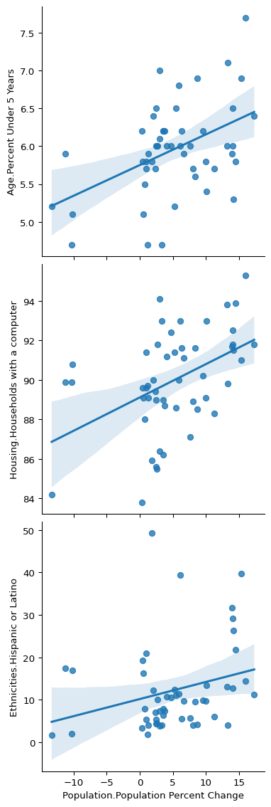
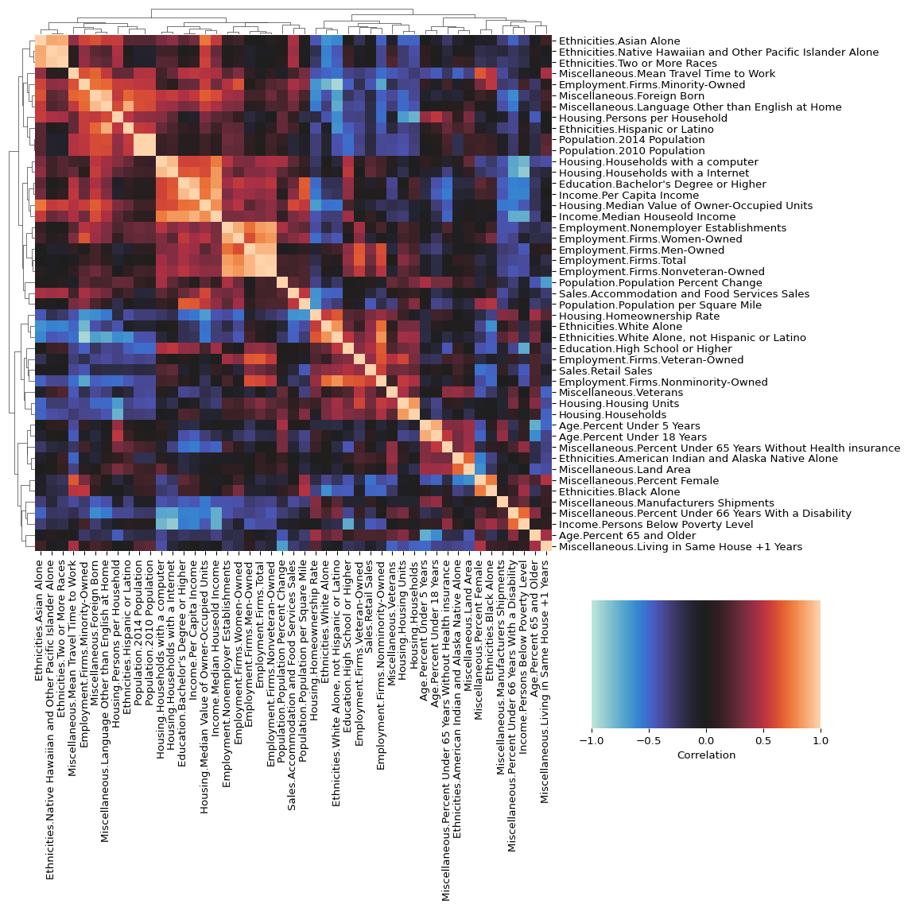
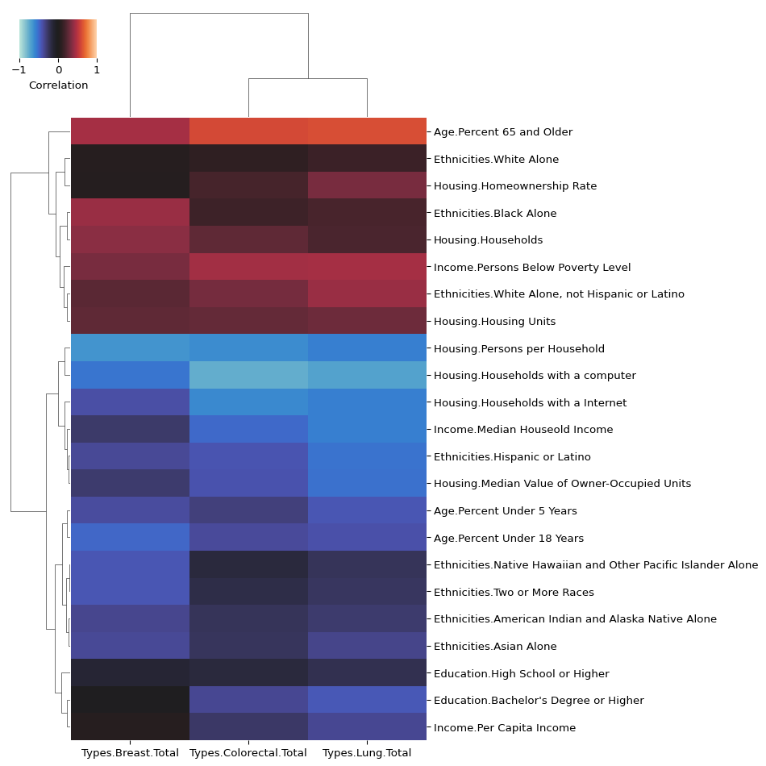

import numpy as np
import pandas as pd
import seaborn as sns
pd.options.mode.copy_on_write = "warn"
pd.set_option("display.max_rows", 10)7 Intro to Exploratory Data Analysis with Python
In this tutorial, we will learn the basics of exploratory data analysis in Python using Pandas (and just a tiny bit of seaborn).
Introduction
Exploratory Data Analysis, or EDA for short, is the process of building an understanding of your data. Before jumping into complex statistical analyses or building predictive models, EDA helps you understand what your data actually contains. It’s about visually and statistically summarizing your dataset, identifying patterns, spotting anomalies, and generating hypotheses.
EDA is a critical step in discovery-based research (sometimes known as foundational or exploratory research). As biologists, you will be familiar with hypothesis-driven research, whereby you start with the answer (the hypothesis), and try to work back to either prove or disprove it using the scientific method. Discovery-based research fits in even before hypothesis-driven research can begin, and is especially useful in cases where we know so little about the topic or system in question that we can’t craft useful hypotheses. One of its main goals is to build understanding of complex systems and generate hypotheses that can be tested in the more classical style of hypothesis-driven research, and EDA is a critical step in this process.
While EDA is often closely connected with discovery-based research, it is important to note that it is also a critical aspect of hypothesis-driven processes as well. For example, EDA can be a powerful tool for data quality control and assumption checking. It’s important to identify missing values, outliers, or other bad data that could compromise your analysis. Further, many statistical methods have assumptions about your data (like normality or constant variance of errors). EDA helps you verify if these assumptions are reasonable. Without proper exploration of your data, you might miss critical insights or, worse, draw incorrect conclusions from your analyses.
EDA has a role in helping you to build an intuition for your problem domain and your data. Regularly engaging with EDA will help you get a “feel” for your data and better understand its strengths and limitations. This intuition is critical for effective communication of your findings and for productive discussion of your data and problem domain with collaborators and stakeholders, or in publications.
Important Python libraries for doing EDA
Python has a strong set of libraries for exploratory data analysis (EDA). Here are some of the more common ones:
- Pandas: Essential for working with tabular data, offering powerful DataFrame operations.
- NumPy: Provides fast array operations, forming the backbone of numerical computing in Python.
- SciPy: Useful for advanced statistical analysis and scientific computing.
- Statsmodels: Extends on the statistical models provided by SciPy and provides and alternative interface.
- Matplotlib: A versatile library for creating static, animated, and interactive plots.
- Seaborn: Simplifies statistical visualization with built-in themes and functions.
- Jupyter and Quarto: Computational notebooks
There are many more, but you will see these popping up again and again.
Why We’re Using Pandas
We’re using Pandas in this tutorial because:
- Works well with tabular data: Most biological data is structured like a spreadsheet or database table, and Pandas is built for handling this format.
- Widely used: It’s a common tool in both academia and industry.
- Relatively easy to use: Pandas provides a straightforward way to explore and manipulate data.
- Has useful built-ins: Filtering, grouping, summarizing, and plotting data often take just a few lines of code.
- Plays well with others: Pandas integrates smoothly with visualization and statistical tools.
- Uses similar concepts to R’s tidyverse, which many of you have experience with from your previous coursework
We’ll also use a bit of seaborn for visualization, as it can help with certain types of plots or when data is in a certain format.
Practical Examples
In this tutorial, we’ll learn exploratory data analysis (EDA) by working through real research questions with real datasets. Instead of covering every Pandas function upfront, we’ll introduce tools as we need them.
We’ll use datasets from the CORGIS collection, which offers accessible real-world data. Our examples include:
- State Demographics: Analyzing population patterns and economic indicators across the U.S.
- Cancer Statistics: Examining cancer rates and their potential links to demographics.
- Vaccination Impact: Exploring historical disease data to see how vaccines have shaped public health.
These examples will help you learn Pandas in context, and use techniques that are similar to those you could use when getting started with a real research project.
Key Pandas Functionality
After working through the examples, we’ll summarize the essential Pandas operations, including:
- Loading and examining data
- Selecting, filtering, and sorting
- Grouping and aggregating
- Basic visualization
- Merging and joining datasets
By focusing on core functions, you’ll gain practical skills without getting lost in the details. Let’s dive in!
Import Needed Libraries
The first thing we need to do is to import some libraries. We are only using numpy for a couple things in this tutorial: specifying data types the NaN value.
Note: While we don’t need to import it, you will also need to have SciPy installed to run the clustered heatmaps.
State Demographics Data
To start, we are going to look at the state demographics data from The Collection of Really Great, Interesting, Situated Datasets (CORGIS). CORGIS is a collection of datasets that have been cleaned and otherwise made ready for teaching/learning purposes. It was created in part by Dr. Cory Bart, who is a professor at UD.
This state demographics data includes a lot of info about states that we will be able to use to try and explain some of the cancer trends that we see in the next section. To give you an idea of the kinds of data we’ll be working with, here are some of the data categories:
- Population
- Age
- Ethnicities
- Housing
- Income
- Employment
Importing Data
The first thing we need to do is import the data. To do that, we can use the read_csv() function:
state_demographics = pd.read_csv("./_data/state_demographics.csv")Data Overview
After importing data, it’s always a good idea to check out its basic info, things like shape, column names, basic summary statistics, etc.
To get the number of rows and columns in a data frame, we use [shape()][https://pandas.pydata.org/docs/reference/api/pandas.DataFrame.shape.html]:
state_demographics.shape(51, 48)That’s not too much data, so let’s look at the table directly. We will use the head() function to take only the first few rows:
state_demographics.head()| State | Population.Population Percent Change | Population.2014 Population | Population.2010 Population | Age.Percent Under 5 Years | Age.Percent Under 18 Years | Age.Percent 65 and Older | Miscellaneous.Percent Female | Ethnicities.White Alone | Ethnicities.Black Alone | ... | Employment.Nonemployer Establishments | Employment.Firms.Total | Employment.Firms.Men-Owned | Employment.Firms.Women-Owned | Employment.Firms.Minority-Owned | Employment.Firms.Nonminority-Owned | Employment.Firms.Veteran-Owned | Employment.Firms.Nonveteran-Owned | Population.Population per Square Mile | Miscellaneous.Land Area | |
|---|---|---|---|---|---|---|---|---|---|---|---|---|---|---|---|---|---|---|---|---|---|
| 0 | Connecticut | -10.2 | 3605944 | 3574097 | 5.1 | 20.4 | 17.7 | 51.2 | 79.7 | 12.2 | ... | 286874 | 326693 | 187845 | 106678 | 56113 | 259614 | 31056 | 281182 | 738.1 | 4842.36 |
| 1 | Delaware | 8.4 | 989948 | 897934 | 5.6 | 20.9 | 19.4 | 51.7 | 69.2 | 23.2 | ... | 68623 | 73418 | 38328 | 23964 | 14440 | 54782 | 7206 | 60318 | 460.8 | 1948.54 |
| 2 | District of Columbia | 17.3 | 689545 | 601723 | 6.4 | 18.2 | 12.4 | 52.6 | 46.0 | 46.0 | ... | 62583 | 63408 | 30237 | 27064 | 29983 | 29521 | 5070 | 54217 | 9856.5 | 61.05 |
| 3 | Florida | 14.2 | 21538187 | 18801310 | 5.3 | 19.7 | 20.9 | 51.1 | 77.3 | 16.9 | ... | 2388050 | 2100187 | 1084885 | 807817 | 926112 | 1121749 | 185756 | 1846686 | 350.6 | 53624.76 |
| 4 | Georgia | 9.6 | 10711908 | 9687653 | 6.2 | 23.6 | 14.3 | 51.4 | 60.2 | 32.6 | ... | 955621 | 929864 | 480578 | 376506 | 371588 | 538893 | 96787 | 800585 | 168.4 | 57513.49 |
5 rows × 48 columns
To get summary statistics of the numeric rows of a data frame, we use describe(). This can help you to get an overall sense of your data.
state_demographics.describe()| Population.Population Percent Change | Population.2014 Population | Population.2010 Population | Age.Percent Under 5 Years | Age.Percent Under 18 Years | Age.Percent 65 and Older | Miscellaneous.Percent Female | Ethnicities.White Alone | Ethnicities.Black Alone | Ethnicities.American Indian and Alaska Native Alone | ... | Employment.Nonemployer Establishments | Employment.Firms.Total | Employment.Firms.Men-Owned | Employment.Firms.Women-Owned | Employment.Firms.Minority-Owned | Employment.Firms.Nonminority-Owned | Employment.Firms.Veteran-Owned | Employment.Firms.Nonveteran-Owned | Population.Population per Square Mile | Miscellaneous.Land Area | |
|---|---|---|---|---|---|---|---|---|---|---|---|---|---|---|---|---|---|---|---|---|---|
| count | 51.000000 | 5.100000e+01 | 5.100000e+01 | 51.000000 | 51.000000 | 51.000000 | 51.000000 | 51.000000 | 51.000000 | 51.000000 | ... | 5.100000e+01 | 5.100000e+01 | 5.100000e+01 | 5.100000e+01 | 5.100000e+01 | 5.100000e+01 | 51.000000 | 5.100000e+01 | 51.000000 | 51.000000 |
| mean | 5.147059 | 6.499006e+06 | 6.053834e+06 | 5.958824 | 22.139216 | 16.878431 | 50.598039 | 78.068627 | 11.872549 | 2.005882 | ... | 5.193242e+05 | 5.452549e+05 | 2.923801e+05 | 1.938421e+05 | 1.560321e+05 | 3.737521e+05 | 49611.882353 | 4.733260e+05 | 384.403922 | 69253.047843 |
| std | 6.870760 | 7.408023e+06 | 6.823984e+06 | 0.607018 | 1.996805 | 2.008812 | 0.836777 | 13.024907 | 10.704057 | 3.105441 | ... | 6.688605e+05 | 6.614342e+05 | 3.524479e+05 | 2.468993e+05 | 2.992485e+05 | 3.615840e+05 | 51941.581563 | 5.892086e+05 | 1377.354603 | 85526.076023 |
| min | -13.300000 | 5.768510e+05 | 5.636260e+05 | 4.700000 | 18.200000 | 11.400000 | 47.900000 | 25.500000 | 0.600000 | 0.300000 | ... | 5.304200e+04 | 6.242700e+04 | 3.003900e+04 | 1.934400e+04 | 2.354000e+03 | 2.952100e+04 | 5070.000000 | 5.135300e+04 | 1.200000 | 61.050000 |
| 25% | 1.950000 | 1.816411e+06 | 1.696962e+06 | 5.700000 | 21.050000 | 16.100000 | 50.200000 | 71.250000 | 3.650000 | 0.500000 | ... | 1.216330e+05 | 1.431060e+05 | 7.392400e+04 | 4.478700e+04 | 1.472200e+04 | 1.261350e+05 | 14892.500000 | 1.200765e+05 | 45.800000 | 33334.515000 |
| 50% | 4.100000 | 4.505836e+06 | 4.339367e+06 | 6.000000 | 22.100000 | 16.900000 | 50.700000 | 80.600000 | 8.500000 | 0.700000 | ... | 3.026530e+05 | 3.393050e+05 | 1.878450e+05 | 1.230150e+05 | 6.125200e+04 | 2.762690e+05 | 36273.000000 | 2.887900e+05 | 101.200000 | 53624.760000 |
| 75% | 9.800000 | 7.428392e+06 | 6.636084e+06 | 6.200000 | 23.250000 | 17.850000 | 51.200000 | 86.900000 | 16.300000 | 1.600000 | ... | 5.568705e+05 | 5.790585e+05 | 3.276305e+05 | 2.041645e+05 | 1.288060e+05 | 4.462370e+05 | 58167.500000 | 4.975955e+05 | 221.450000 | 80692.730000 |
| max | 17.300000 | 3.953822e+07 | 3.725396e+07 | 7.700000 | 29.000000 | 21.200000 | 52.600000 | 94.400000 | 46.000000 | 15.600000 | ... | 3.453769e+06 | 3.548449e+06 | 1.852580e+06 | 1.320085e+06 | 1.619857e+06 | 1.819107e+06 | 252377.000000 | 3.176341e+06 | 9856.500000 | 570640.950000 |
8 rows × 47 columns
Do you notice how the values in the table have a lot of precision, and are all using scientific notation? Sometimes this is what we want, but we really don’t need all that here, and it’s only serving to clutter up the view. We can control the precision of the numbers in the table using the .style.format() pattern. Since we have some large numbers in there, let’s add a thousands place separator as well.
state_demographics.describe().style.format(
# Set precision of numbers to 2 decimal places
precision=2,
# Use a comma to separate out the thousands in the big numbers
thousands=",",
)| Population.Population Percent Change | Population.2014 Population | Population.2010 Population | Age.Percent Under 5 Years | Age.Percent Under 18 Years | Age.Percent 65 and Older | Miscellaneous.Percent Female | Ethnicities.White Alone | Ethnicities.Black Alone | Ethnicities.American Indian and Alaska Native Alone | Ethnicities.Asian Alone | Ethnicities.Native Hawaiian and Other Pacific Islander Alone | Ethnicities.Two or More Races | Ethnicities.Hispanic or Latino | Ethnicities.White Alone, not Hispanic or Latino | Miscellaneous.Veterans | Miscellaneous.Foreign Born | Housing.Housing Units | Housing.Homeownership Rate | Housing.Median Value of Owner-Occupied Units | Housing.Households | Housing.Persons per Household | Miscellaneous.Living in Same House +1 Years | Miscellaneous.Language Other than English at Home | Housing.Households with a computer | Housing.Households with a Internet | Education.High School or Higher | Education.Bachelor's Degree or Higher | Miscellaneous.Percent Under 66 Years With a Disability | Miscellaneous.Percent Under 65 Years Without Health insurance | Sales.Accommodation and Food Services Sales | Miscellaneous.Manufacturers Shipments | Sales.Retail Sales | Miscellaneous.Mean Travel Time to Work | Income.Median Houseold Income | Income.Per Capita Income | Income.Persons Below Poverty Level | Employment.Nonemployer Establishments | Employment.Firms.Total | Employment.Firms.Men-Owned | Employment.Firms.Women-Owned | Employment.Firms.Minority-Owned | Employment.Firms.Nonminority-Owned | Employment.Firms.Veteran-Owned | Employment.Firms.Nonveteran-Owned | Population.Population per Square Mile | Miscellaneous.Land Area | |
|---|---|---|---|---|---|---|---|---|---|---|---|---|---|---|---|---|---|---|---|---|---|---|---|---|---|---|---|---|---|---|---|---|---|---|---|---|---|---|---|---|---|---|---|---|---|---|---|
| count | 51.00 | 51.00 | 51.00 | 51.00 | 51.00 | 51.00 | 51.00 | 51.00 | 51.00 | 51.00 | 51.00 | 51.00 | 51.00 | 51.00 | 51.00 | 51.00 | 51.00 | 51.00 | 51.00 | 51.00 | 51.00 | 51.00 | 51.00 | 51.00 | 51.00 | 51.00 | 51.00 | 51.00 | 51.00 | 51.00 | 51.00 | 49.00 | 51.00 | 51.00 | 51.00 | 51.00 | 51.00 | 51.00 | 51.00 | 51.00 | 51.00 | 51.00 | 51.00 | 51.00 | 51.00 | 51.00 | 51.00 |
| mean | 5.15 | 6,499,005.51 | 6,053,834.08 | 5.96 | 22.14 | 16.88 | 50.60 | 78.07 | 11.87 | 2.01 | 4.55 | 0.40 | 3.11 | 12.25 | 67.67 | 357,457.29 | 9.41 | 2,738,906.75 | 65.67 | 233,176.47 | 2,367,765.65 | 2.56 | 85.24 | 14.98 | 89.98 | 82.05 | 89.54 | 31.77 | 9.16 | 9.96 | 13,885,070.55 | 116,411,562.24 | 82,741,605.31 | 24.80 | 63,097.86 | 33,743.06 | 12.17 | 519,324.16 | 545,254.90 | 292,380.10 | 193,842.12 | 156,032.14 | 373,752.12 | 49,611.88 | 473,326.00 | 384.40 | 69,253.05 |
| std | 6.87 | 7,408,022.55 | 6,823,984.27 | 0.61 | 2.00 | 2.01 | 0.84 | 13.02 | 10.70 | 3.11 | 5.52 | 1.41 | 3.21 | 10.35 | 16.18 | 351,951.29 | 6.11 | 2,888,415.00 | 5.44 | 109,205.70 | 2,531,758.54 | 0.17 | 2.06 | 9.77 | 2.55 | 3.79 | 2.70 | 6.43 | 1.77 | 3.64 | 16,274,397.82 | 131,704,461.49 | 91,289,768.45 | 3.98 | 10,715.13 | 5,689.58 | 2.68 | 668,860.54 | 661,434.25 | 352,447.95 | 246,899.31 | 299,248.47 | 361,584.05 | 51,941.58 | 589,208.57 | 1,377.35 | 85,526.08 |
| min | -13.30 | 576,851.00 | 563,626.00 | 4.70 | 18.20 | 11.40 | 47.90 | 25.50 | 0.60 | 0.30 | 0.80 | 0.00 | 1.30 | 1.70 | 21.70 | 26,156.00 | 1.70 | 280,291.00 | 41.60 | 119,000.00 | 230,101.00 | 2.30 | 80.50 | 2.60 | 83.80 | 71.50 | 83.30 | 20.60 | 6.40 | 3.50 | 1,564,272.00 | 309,832.00 | 4,439,933.00 | 17.20 | 45,081.00 | 24,369.00 | 7.30 | 53,042.00 | 62,427.00 | 30,039.00 | 19,344.00 | 2,354.00 | 29,521.00 | 5,070.00 | 51,353.00 | 1.20 | 61.05 |
| 25% | 1.95 | 1,816,411.00 | 1,696,961.50 | 5.70 | 21.05 | 16.10 | 50.20 | 71.25 | 3.65 | 0.50 | 1.80 | 0.10 | 2.10 | 5.30 | 57.40 | 116,811.50 | 4.75 | 801,166.00 | 64.10 | 159,750.00 | 681,296.50 | 2.46 | 83.95 | 7.30 | 88.80 | 80.70 | 87.30 | 27.85 | 7.85 | 7.30 | 4,171,798.50 | 24,553,072.00 | 23,908,598.50 | 22.25 | 55,560.50 | 30,276.50 | 10.10 | 121,633.00 | 143,106.00 | 73,924.00 | 44,787.00 | 14,722.00 | 126,135.00 | 14,892.50 | 120,076.50 | 45.80 | 33,334.51 |
| 50% | 4.10 | 4,505,836.00 | 4,339,367.00 | 6.00 | 22.10 | 16.90 | 50.70 | 80.60 | 8.50 | 0.70 | 3.00 | 0.10 | 2.40 | 9.80 | 71.10 | 270,775.00 | 7.20 | 2,006,358.00 | 66.30 | 194,500.00 | 1,734,618.00 | 2.52 | 85.30 | 11.80 | 89.90 | 82.50 | 90.20 | 31.30 | 8.90 | 9.30 | 9,542,068.00 | 81,927,799.00 | 54,869,978.00 | 24.80 | 61,439.00 | 32,176.00 | 11.80 | 302,653.00 | 339,305.00 | 187,845.00 | 123,015.00 | 61,252.00 | 276,269.00 | 36,273.00 | 288,790.00 | 101.20 | 53,624.76 |
| 75% | 9.80 | 7,428,391.50 | 6,636,084.50 | 6.20 | 23.25 | 17.85 | 51.20 | 86.90 | 16.30 | 1.60 | 5.10 | 0.20 | 2.90 | 13.90 | 79.10 | 459,667.50 | 13.65 | 3,135,492.50 | 69.00 | 271,750.00 | 2,732,946.50 | 2.62 | 86.70 | 21.00 | 91.65 | 84.80 | 91.70 | 34.45 | 10.20 | 12.15 | 17,652,438.00 | 139,960,482.00 | 101,458,882.50 | 27.35 | 71,463.50 | 36,454.00 | 13.50 | 556,870.50 | 579,058.50 | 327,630.50 | 204,164.50 | 128,806.00 | 446,237.00 | 58,167.50 | 497,595.50 | 221.45 | 80,692.73 |
| max | 17.30 | 39,538,223.00 | 37,253,956.00 | 7.70 | 29.00 | 21.20 | 52.60 | 94.40 | 46.00 | 15.60 | 37.60 | 10.10 | 24.20 | 49.30 | 93.00 | 1,574,531.00 | 26.80 | 14,366,336.00 | 73.20 | 615,300.00 | 13,044,266.00 | 3.12 | 89.80 | 44.20 | 95.30 | 88.30 | 93.60 | 58.50 | 14.00 | 20.80 | 90,830,372.00 | 702,603,073.00 | 481,800,461.00 | 33.60 | 86,420.00 | 56,147.00 | 19.60 | 3,453,769.00 | 3,548,449.00 | 1,852,580.00 | 1,320,085.00 | 1,619,857.00 | 1,819,107.00 | 252,377.00 | 3,176,341.00 | 9,856.50 | 570,640.95 |
One more thing we can do to clean up this view is to sort the variables by their name.
(
state_demographics.describe()
# Sort the data frame by the row index (a.k.a., the row names)
.sort_index(axis="columns")
.style.format(precision=2, thousands=",")
)| Age.Percent 65 and Older | Age.Percent Under 18 Years | Age.Percent Under 5 Years | Education.Bachelor's Degree or Higher | Education.High School or Higher | Employment.Firms.Men-Owned | Employment.Firms.Minority-Owned | Employment.Firms.Nonminority-Owned | Employment.Firms.Nonveteran-Owned | Employment.Firms.Total | Employment.Firms.Veteran-Owned | Employment.Firms.Women-Owned | Employment.Nonemployer Establishments | Ethnicities.American Indian and Alaska Native Alone | Ethnicities.Asian Alone | Ethnicities.Black Alone | Ethnicities.Hispanic or Latino | Ethnicities.Native Hawaiian and Other Pacific Islander Alone | Ethnicities.Two or More Races | Ethnicities.White Alone | Ethnicities.White Alone, not Hispanic or Latino | Housing.Homeownership Rate | Housing.Households | Housing.Households with a Internet | Housing.Households with a computer | Housing.Housing Units | Housing.Median Value of Owner-Occupied Units | Housing.Persons per Household | Income.Median Houseold Income | Income.Per Capita Income | Income.Persons Below Poverty Level | Miscellaneous.Foreign Born | Miscellaneous.Land Area | Miscellaneous.Language Other than English at Home | Miscellaneous.Living in Same House +1 Years | Miscellaneous.Manufacturers Shipments | Miscellaneous.Mean Travel Time to Work | Miscellaneous.Percent Female | Miscellaneous.Percent Under 65 Years Without Health insurance | Miscellaneous.Percent Under 66 Years With a Disability | Miscellaneous.Veterans | Population.2010 Population | Population.2014 Population | Population.Population Percent Change | Population.Population per Square Mile | Sales.Accommodation and Food Services Sales | Sales.Retail Sales | |
|---|---|---|---|---|---|---|---|---|---|---|---|---|---|---|---|---|---|---|---|---|---|---|---|---|---|---|---|---|---|---|---|---|---|---|---|---|---|---|---|---|---|---|---|---|---|---|---|
| count | 51.00 | 51.00 | 51.00 | 51.00 | 51.00 | 51.00 | 51.00 | 51.00 | 51.00 | 51.00 | 51.00 | 51.00 | 51.00 | 51.00 | 51.00 | 51.00 | 51.00 | 51.00 | 51.00 | 51.00 | 51.00 | 51.00 | 51.00 | 51.00 | 51.00 | 51.00 | 51.00 | 51.00 | 51.00 | 51.00 | 51.00 | 51.00 | 51.00 | 51.00 | 51.00 | 49.00 | 51.00 | 51.00 | 51.00 | 51.00 | 51.00 | 51.00 | 51.00 | 51.00 | 51.00 | 51.00 | 51.00 |
| mean | 16.88 | 22.14 | 5.96 | 31.77 | 89.54 | 292,380.10 | 156,032.14 | 373,752.12 | 473,326.00 | 545,254.90 | 49,611.88 | 193,842.12 | 519,324.16 | 2.01 | 4.55 | 11.87 | 12.25 | 0.40 | 3.11 | 78.07 | 67.67 | 65.67 | 2,367,765.65 | 82.05 | 89.98 | 2,738,906.75 | 233,176.47 | 2.56 | 63,097.86 | 33,743.06 | 12.17 | 9.41 | 69,253.05 | 14.98 | 85.24 | 116,411,562.24 | 24.80 | 50.60 | 9.96 | 9.16 | 357,457.29 | 6,053,834.08 | 6,499,005.51 | 5.15 | 384.40 | 13,885,070.55 | 82,741,605.31 |
| std | 2.01 | 2.00 | 0.61 | 6.43 | 2.70 | 352,447.95 | 299,248.47 | 361,584.05 | 589,208.57 | 661,434.25 | 51,941.58 | 246,899.31 | 668,860.54 | 3.11 | 5.52 | 10.70 | 10.35 | 1.41 | 3.21 | 13.02 | 16.18 | 5.44 | 2,531,758.54 | 3.79 | 2.55 | 2,888,415.00 | 109,205.70 | 0.17 | 10,715.13 | 5,689.58 | 2.68 | 6.11 | 85,526.08 | 9.77 | 2.06 | 131,704,461.49 | 3.98 | 0.84 | 3.64 | 1.77 | 351,951.29 | 6,823,984.27 | 7,408,022.55 | 6.87 | 1,377.35 | 16,274,397.82 | 91,289,768.45 |
| min | 11.40 | 18.20 | 4.70 | 20.60 | 83.30 | 30,039.00 | 2,354.00 | 29,521.00 | 51,353.00 | 62,427.00 | 5,070.00 | 19,344.00 | 53,042.00 | 0.30 | 0.80 | 0.60 | 1.70 | 0.00 | 1.30 | 25.50 | 21.70 | 41.60 | 230,101.00 | 71.50 | 83.80 | 280,291.00 | 119,000.00 | 2.30 | 45,081.00 | 24,369.00 | 7.30 | 1.70 | 61.05 | 2.60 | 80.50 | 309,832.00 | 17.20 | 47.90 | 3.50 | 6.40 | 26,156.00 | 563,626.00 | 576,851.00 | -13.30 | 1.20 | 1,564,272.00 | 4,439,933.00 |
| 25% | 16.10 | 21.05 | 5.70 | 27.85 | 87.30 | 73,924.00 | 14,722.00 | 126,135.00 | 120,076.50 | 143,106.00 | 14,892.50 | 44,787.00 | 121,633.00 | 0.50 | 1.80 | 3.65 | 5.30 | 0.10 | 2.10 | 71.25 | 57.40 | 64.10 | 681,296.50 | 80.70 | 88.80 | 801,166.00 | 159,750.00 | 2.46 | 55,560.50 | 30,276.50 | 10.10 | 4.75 | 33,334.51 | 7.30 | 83.95 | 24,553,072.00 | 22.25 | 50.20 | 7.30 | 7.85 | 116,811.50 | 1,696,961.50 | 1,816,411.00 | 1.95 | 45.80 | 4,171,798.50 | 23,908,598.50 |
| 50% | 16.90 | 22.10 | 6.00 | 31.30 | 90.20 | 187,845.00 | 61,252.00 | 276,269.00 | 288,790.00 | 339,305.00 | 36,273.00 | 123,015.00 | 302,653.00 | 0.70 | 3.00 | 8.50 | 9.80 | 0.10 | 2.40 | 80.60 | 71.10 | 66.30 | 1,734,618.00 | 82.50 | 89.90 | 2,006,358.00 | 194,500.00 | 2.52 | 61,439.00 | 32,176.00 | 11.80 | 7.20 | 53,624.76 | 11.80 | 85.30 | 81,927,799.00 | 24.80 | 50.70 | 9.30 | 8.90 | 270,775.00 | 4,339,367.00 | 4,505,836.00 | 4.10 | 101.20 | 9,542,068.00 | 54,869,978.00 |
| 75% | 17.85 | 23.25 | 6.20 | 34.45 | 91.70 | 327,630.50 | 128,806.00 | 446,237.00 | 497,595.50 | 579,058.50 | 58,167.50 | 204,164.50 | 556,870.50 | 1.60 | 5.10 | 16.30 | 13.90 | 0.20 | 2.90 | 86.90 | 79.10 | 69.00 | 2,732,946.50 | 84.80 | 91.65 | 3,135,492.50 | 271,750.00 | 2.62 | 71,463.50 | 36,454.00 | 13.50 | 13.65 | 80,692.73 | 21.00 | 86.70 | 139,960,482.00 | 27.35 | 51.20 | 12.15 | 10.20 | 459,667.50 | 6,636,084.50 | 7,428,391.50 | 9.80 | 221.45 | 17,652,438.00 | 101,458,882.50 |
| max | 21.20 | 29.00 | 7.70 | 58.50 | 93.60 | 1,852,580.00 | 1,619,857.00 | 1,819,107.00 | 3,176,341.00 | 3,548,449.00 | 252,377.00 | 1,320,085.00 | 3,453,769.00 | 15.60 | 37.60 | 46.00 | 49.30 | 10.10 | 24.20 | 94.40 | 93.00 | 73.20 | 13,044,266.00 | 88.30 | 95.30 | 14,366,336.00 | 615,300.00 | 3.12 | 86,420.00 | 56,147.00 | 19.60 | 26.80 | 570,640.95 | 44.20 | 89.80 | 702,603,073.00 | 33.60 | 52.60 | 20.80 | 14.00 | 1,574,531.00 | 37,253,956.00 | 39,538,223.00 | 17.30 | 9,856.50 | 90,830,372.00 | 481,800,461.00 |
That’s a pretty nice looking summary now!
Note: Do you see how we put that little pipeline in parentheses? This is so that we can separate operations on their own line, which can improve readability, and also let us add comments as needed.
I want to make something clear. We haven’t done anything to change the data frame that we imported.
state_demographics.head()| State | Population.Population Percent Change | Population.2014 Population | Population.2010 Population | Age.Percent Under 5 Years | Age.Percent Under 18 Years | Age.Percent 65 and Older | Miscellaneous.Percent Female | Ethnicities.White Alone | Ethnicities.Black Alone | ... | Employment.Nonemployer Establishments | Employment.Firms.Total | Employment.Firms.Men-Owned | Employment.Firms.Women-Owned | Employment.Firms.Minority-Owned | Employment.Firms.Nonminority-Owned | Employment.Firms.Veteran-Owned | Employment.Firms.Nonveteran-Owned | Population.Population per Square Mile | Miscellaneous.Land Area | |
|---|---|---|---|---|---|---|---|---|---|---|---|---|---|---|---|---|---|---|---|---|---|
| 0 | Connecticut | -10.2 | 3605944 | 3574097 | 5.1 | 20.4 | 17.7 | 51.2 | 79.7 | 12.2 | ... | 286874 | 326693 | 187845 | 106678 | 56113 | 259614 | 31056 | 281182 | 738.1 | 4842.36 |
| 1 | Delaware | 8.4 | 989948 | 897934 | 5.6 | 20.9 | 19.4 | 51.7 | 69.2 | 23.2 | ... | 68623 | 73418 | 38328 | 23964 | 14440 | 54782 | 7206 | 60318 | 460.8 | 1948.54 |
| 2 | District of Columbia | 17.3 | 689545 | 601723 | 6.4 | 18.2 | 12.4 | 52.6 | 46.0 | 46.0 | ... | 62583 | 63408 | 30237 | 27064 | 29983 | 29521 | 5070 | 54217 | 9856.5 | 61.05 |
| 3 | Florida | 14.2 | 21538187 | 18801310 | 5.3 | 19.7 | 20.9 | 51.1 | 77.3 | 16.9 | ... | 2388050 | 2100187 | 1084885 | 807817 | 926112 | 1121749 | 185756 | 1846686 | 350.6 | 53624.76 |
| 4 | Georgia | 9.6 | 10711908 | 9687653 | 6.2 | 23.6 | 14.3 | 51.4 | 60.2 | 32.6 | ... | 955621 | 929864 | 480578 | 376506 | 371588 | 538893 | 96787 | 800585 | 168.4 | 57513.49 |
5 rows × 48 columns
As you see, it’s the same data frame we started with. All the functions we have used so far have returned new data frames. You will see this pattern a lot–many Pandas functions return new data rather modifying existing data.
Tip 7.1: Stop & Think
Why is it a good idea to look at a summary of data that you imported?
Filtering Columns
This table has a lot of different kinds of data about state demographics. The nice thing is that each of the different categories is used as a prefix to the column name, e.g., data about income is prefixed with Income, data about population is prefixed with Population, and so on. We can leverage this labeling scheme to chop our data frame into more manageable chunks.
We can use the filter() function to filter columns in a bunch of different ways. For now we will use the regular expression (regex) argument to specify that we want to match at the start of the column name. For example, getting all the data columns about ethnicities:
(
state_demographics
# Use set_index to convert the state column to the row names
.set_index("State")
# Use filter() to keep columns matching the given pattern
.filter(regex=r"^Ethnicities")
# Only display the first 5 rows
.head()
)| Ethnicities.White Alone | Ethnicities.Black Alone | Ethnicities.American Indian and Alaska Native Alone | Ethnicities.Asian Alone | Ethnicities.Native Hawaiian and Other Pacific Islander Alone | Ethnicities.Two or More Races | Ethnicities.Hispanic or Latino | Ethnicities.White Alone, not Hispanic or Latino | |
|---|---|---|---|---|---|---|---|---|
| State | ||||||||
| Connecticut | 79.7 | 12.2 | 0.6 | 5.0 | 0.1 | 2.5 | 16.9 | 65.9 |
| Delaware | 69.2 | 23.2 | 0.7 | 4.1 | 0.1 | 2.7 | 9.6 | 61.7 |
| District of Columbia | 46.0 | 46.0 | 0.6 | 4.5 | 0.1 | 2.9 | 11.3 | 37.5 |
| Florida | 77.3 | 16.9 | 0.5 | 3.0 | 0.1 | 2.2 | 26.4 | 53.2 |
| Georgia | 60.2 | 32.6 | 0.5 | 4.4 | 0.1 | 2.2 | 9.9 | 52.0 |
Note: If you need a refresher on regular expressions check out Appendix I.
We needed to use the set_index() here so that the state name would still be present on the resulting data frames.
This works for other categories as well. Here it is for Income:
state_demographics.set_index("State").filter(regex=r"^Income").head()| Income.Median Houseold Income | Income.Per Capita Income | Income.Persons Below Poverty Level | |
|---|---|---|---|
| State | |||
| Connecticut | 78444 | 44496 | 10.0 |
| Delaware | 68287 | 35450 | 11.3 |
| District of Columbia | 86420 | 56147 | 13.5 |
| Florida | 55660 | 31619 | 12.7 |
| Georgia | 58700 | 31067 | 13.3 |
We can pass these filtered tables to describe() and other functions as well:
state_demographics.set_index("State").filter(regex=r"^Income").describe()| Income.Median Houseold Income | Income.Per Capita Income | Income.Persons Below Poverty Level | |
|---|---|---|---|
| count | 51.000000 | 51.000000 | 51.000000 |
| mean | 63097.862745 | 33743.058824 | 12.170588 |
| std | 10715.134497 | 5689.577086 | 2.678006 |
| min | 45081.000000 | 24369.000000 | 7.300000 |
| 25% | 55560.500000 | 30276.500000 | 10.100000 |
| 50% | 61439.000000 | 32176.000000 | 11.800000 |
| 75% | 71463.500000 | 36454.000000 | 13.500000 |
| max | 86420.000000 | 56147.000000 | 19.600000 |
This is another way that we can start to get a feel for our data.
Tip 7.2: Stop & Think
Why might filtering columns by category prefixes (like “Population” or “Income”) be useful during exploratory data analysis?
Exploring Your Data
Now that we have a basic idea of what our data looks like, we can start to explore it a bit more. The best place to start is to actually look at the data. Pandas gives you the ability to create basic charts without having to use a 3rd-party package. As long as you don’t want anything too complex, it will be fine to start with.
Basic Population Plots
Let’s start by plotting some basic state population info. We can use Panda’s plot() function for this:
(
state_demographics
# Take only the columns that start with Population.201X, where X is some digit
# E.g., Population.2010, or Population.2014.
.filter(regex=r"^Population\.201\d")
# Draw a bar plot
.plot(kind="bar")
)
That’s not bad, but the axes are a bit weird. Let’s adjust them. The simplest way to do that is to be more specific about which data we will need in our chart. Then, we can explicitly set the x and y axes.
# Make a list of the columns that we want to keep
columns = ["State", "Population.2010 Population", "Population.2014 Population"]
# Use the "bracket notation" to select only those columns specified in the list we just
# created.
plot_data = (
state_demographics[columns]
# Rename the population columns to something shorter.
# It will make the chart legends look nicer.
.rename(
# We want to rename columns. The keys of this dictionary are the old column
# names, and the values are the new column names.
columns={
"Population.2010 Population": "2010 Population",
"Population.2014 Population": "2014 Population",
}
)
)
# Plot the data subset
plot_data.plot(
# Make it a bar chart
kind="bar",
# Put "State" on the x-axis
x="State",
# And put both population columns on the y-axis
y=["2010 Population", "2014 Population"],
figsize=(8, 3),
)
Not bad! The plotting function was smart enough to put both population data series on the chart, and to include a nice legend so that we can tell them apart.
At least we have the State names on the x-axis now, but they are pretty smooshed together. There are a bunch of ways we could fix it:
- Shrink the label size
- Adjust the chart proportions
- Use a horizontal bar chart (and adjust the proportions)
Shrinking the label size:
plot_data.plot(
kind="bar",
x="State",
y=["2010 Population", "2014 Population"],
fontsize=6,
)
That works, but now the labels are tiny, and it shrunk both the x and y axis labels. You can shrink just the x-axis tick labels, but to do so you need to “eject” out of the pandas API and drop down into matplotlib code.
import matplotlib.pyplot as plt
# Create your plot
ax = plot_data.plot(
kind="bar",
x="State",
y=["2010 Population", "2014 Population"],
)
# Adjust only x-axis tick labels
# 8 is the fontsize, adjust it as needed
ax.tick_params(axis="x", labelsize=8)
# Show the chart
plt.show()
Don’t worry too much about the details of this. I just wanted to show you that the plots returned by Pandas are really matplotlib objects, and can be interacted with in the usual way when required.
Let’s adjust the figure proportions next:
plot_data.plot(
kind="bar",
x="State",
y=["2010 Population", "2014 Population"],
# Set the width to 8 units, and the height to 3
figsize=(8, 3),
# Set the font size of all tick labels to 9
fontsize=9
)
That’s fairly readable. Above, I mentioned how long data and plots tend to fit better on the screen both in your reports and when actively doing the analysis. So let’s switch to a horizontal bar chart. That way, we can give the states a little more room on the plot.
plot_data.plot(
# Draw a horizontal bar chart. Note the `h` at the end of `barh`.
kind="barh",
x="State",
y=["2010 Population", "2014 Population"],
figsize=(5, 8),
)
Note: You might find it a little weird that we still specify State as the x values and Population as the y values, even thought the chart shows the on the opposite axis. Just roll with it :)
That’s looking pretty good now! You might think it is a little bit weird for the state names to be going in reverse alphabetical order as you go down the page. I suppose this is chosen because in “normal” math plots, the origin is 0, and the values “increase” as you move away from the origin. However, it just feels weird for it to do this when the y-axis is categorical rather than continuous. So let’s reverse it.
(
plot_data
# Reverse sort the rows based on the State column
.sort_values("State", ascending=False).plot(
kind="barh",
x="State",
y=["2010 Population", "2014 Population"],
figsize=(5, 8),
)
)
One last thing. Let’s add an axis label to the x-axis. I know there is a legend there, but I think it is still good practice to label all axes in a plot.
(
plot_data
# Reverse sort the rows based on the State column
.sort_values("State", ascending=False).plot(
kind="barh",
x="State",
y=["2010 Population", "2014 Population"],
figsize=(5, 8),
xlabel="Population"
)
)
That’s what I’m talking about! As you can see, with just a few lines of code, you can make totally reasonable looking plots.
Depending on your use case, you might want to sort the data so that the bars are always decreasing. That way, it’s easier for the viewer to look at overall trends, rather than being able to quickly pick out specific states.
To do this we will sort by population. However, we are plotting two different years on the chart, so we need to decide which way to sort it. Reasonable options might be:
- Pick one of the years and sort by that one
- Sort by the mean
- Sort by the max
Any of them could work depending on your situation, but let’s keep it simple and sort by the 2014 population:
(
plot_data
# Reverse sort the rows based on the State column
.sort_values("2014 Population").plot(
kind="barh",
x="State",
y=["2010 Population", "2014 Population"],
figsize=(5, 8),
xlabel="Population",
)
)
Tip 7.3: Stop & Think
Why might it be important to have clean, professional looking data visualizations, even during the exploratory data analysis phase of your project?
Percent Population Change
Notice any trends? One thing that we can kind of see is that there are some states that look like they had bigger population changes than other states. One of our data columns already tracks this: Population.Population Percent Change. Let’s take a look at the basic plot. We will use a lot of the same options as we did in the last one.
state_demographics.plot(
kind="barh",
x="State",
y="Population.Population Percent Change",
figsize=(5, 8),
xlabel="Population",
)
This plot is pretty good, but we can do better with a bit more effort. Here’s a couple things that will improve it:
- Remove the legend since there is only one series to plot
- Adjust the bar color so that population increase blue and decrease is orange
- Sort states from most increase to most decrease
plot_data = state_demographics[
["State", "Population.Population Percent Change"]
].sort_values("Population.Population Percent Change")
# Create list with colors based on positive/negative values
colors = [
# Negative values will be orange, positive values will be blue
"tab:orange" if x < 0 else "tab:blue"
# Do this calculation for each value in the series that we want to plot.
for x in plot_data["Population.Population Percent Change"]
]
plot_data.plot(
kind="barh",
x="State",
y="Population.Population Percent Change",
figsize=(5, 8),
xlabel="Population Change (%)",
# Specify the list of colors to use
color=colors,
# Remove the legend
legend=False,
)
# Put a gray line at x=0 to help guide the viewer's attention.
plt.axvline(x=0, color="#666666")
To adjust the colors, we had to create a list of colors the same length as the data that we wanted to plot. In this way, each row will be given its correct color.
Note: tab:blue and tab:orange are built-in colors in matplotlib.
Note: You can specify these labeled arguments in any order.
That’s really not a bad plot! I wonder if the states with the biggest population changes were already some of the most populous states?
state_demographics.plot(
kind="scatter",
x="Population.2010 Population",
y="Population.Population Percent Change",
)
Doesn’t look like a super strong trend there, but let’s log the x scale as maybe orders of magnitude matter here.
state_demographics.plot(
kind="scatter",
x="Population.2010 Population",
y="Population.Population Percent Change",
# Log the x axis
logx=True,
)
Nope, nothing there.
Tip 7.4: Stop & Think
When might you use a logarithmic scale on either axis of a plot, and what insights can this reveal that a linear scale might not?
Do you think any of the state demographic data is correlated with the percent population change? To try and answer this question, we can calculate all the correlation values for the columns in the state demographics data frame.
# Get the correlation between columns in the data frame
correlation_matrix = state_demographics.corr(
# Restrict the calculation to only numeric columns
numeric_only=True
)
Tip 7.5: Stop & Think
What can correlation values tell us during exploratory data analysis, and what are their limitations?
Now that we have the correlation values, let’s take a look at them. First, we need to make a data frame with the data in a nice format that makes it easy to plot the data.
# Display the correlations values between the percent population change and the other
# variables.
plot_data = (
# Select only the percent change column
correlation_matrix[["Population.Population Percent Change"]]
# Then sort the rows based on their correlation to the percent population change
.sort_values("Population.Population Percent Change")
# Remove the Population.Population Percent Change row from the results, since
# we don't care about the "self-correlation"
.drop("Population.Population Percent Change")
# Convert the row names to a column called "Variable"
.reset_index(names="Variable")
# Rename the 2nd column for a nicer looking chart
.rename(columns={"Population.Population Percent Change": "Correlation"})
)
plot_data| Variable | Correlation | |
|---|---|---|
| 0 | Miscellaneous.Living in Same House +1 Years | -0.690011 |
| 1 | Age.Percent 65 and Older | -0.423079 |
| 2 | Housing.Homeownership Rate | -0.343682 |
| 3 | Miscellaneous.Percent Under 66 Years With a Di... | -0.306390 |
| 4 | Ethnicities.White Alone, not Hispanic or Latino | -0.269663 |
| ... | ... | ... |
| 41 | Housing.Persons per Household | 0.277861 |
| 42 | Age.Percent Under 18 Years | 0.323823 |
| 43 | Miscellaneous.Percent Under 65 Years Without H... | 0.330227 |
| 44 | Housing.Households with a computer | 0.455228 |
| 45 | Age.Percent Under 5 Years | 0.459584 |
46 rows × 2 columns
Note: earlier we used drop() to remove columns. Now you see that it can also be used to drop rows, depending on the arguments used. You will find Pandas has a lot of functions like this.
Next, we can create a list of colors for the bars of the plot. We want to color variables with a positive correlation to the percent population change blue, and a negative correlation orange.
# Create list with colors based on positive/negative values
colors = [
# Negative values will be orange, positive values will be blue
"tab:orange" if x < 0 else "tab:blue"
# Do this calculation for each correlation value in the series.
for x in plot_data["Correlation"]
]Finally, let’s make the plot. The code will be very similar to the previous plots we have made.
plot_data.plot(
kind="barh",
x="Variable",
y="Correlation",
figsize=(5, 10),
xlabel="Correlation with Percent Population Change",
legend=False,
color=colors,
)
plt.axvline(x=0, color="#666666")
That’s nice! Do you see any interesting trends?
- Age data
- Increasing proportion of young population is strongly correlated with positive population change
- Increasing proportion of elderly population is highly correlated with decreasing population.
- Makes sense…
- Ethnicity data
- These are all positively correlated with population change: “Hispanic or Latino”, “Languages other than English at home”, “Foreign Born”.
- In contrast, “White Alone” and “White Alone, not Hispanic or Latino” are negatively correlated with population change.
- Is this suggesting immigration is driving some of the population growth?
- Education & Income data
- “Households with a computer”, “Households with internet”, “Bachelor’s Degree or Higher” are positively correlated with population change
- “Persons Below Poverty Level” is negatively correlated with population change
- Maybe it’s suggesting people are moving to more educated or prosperous areas?
These are all avenues that you might want to take a look at if this data was important to your research.
As you can see, there are a lot variables there and most of them have pretty weak correlation. This is a good time to show you how to filter rows based on some criteria of the data. Let’s filter out any rows that have correlation values between -0.15 and 0.15. To do this, we can use query():
plot_data_with_some_correlation = plot_data.query(
"Correlation < -0.15 or Correlation > 0.15"
)The query() function is very cool and highly flexible and dynamic. We will see a few more examples of it later in the tutorial. For now, just know that you can access columns of your data frame and use them to filter rows in a natural looking way.
Once we have the filtered data, we can regenerate the color list, and plot the data.
# We need to redo the colors again.
colors = [
"tab:orange" if x < 0 else "tab:blue"
for x in plot_data_with_some_correlation["Correlation"]
]
plot_data_with_some_correlation.plot(
kind="barh",
x="Variable",
y="Correlation",
figsize=(5, 10),
xlabel="Correlation with Percent Population Change",
legend=False,
color=colors,
)
plt.axvline(x=0, color="#666666")
It’s generally not a good idea to take correlation values at face value: it doesn’t measure all types of dependencies and it can be tempting to assign causation to things that have high correlation. So for correlation, it’s always a good idea to look at your data whenever possible. Let’s do that now with some of the most highly correlated or anti-correlated variables. We are going to use seaborn for this, as it makes it super simple to compare multiple variables in a single plot. We can even put regression lines with confidence intervals on the plots by setting the kind="reg" argument!
Here is a plot containing some of the most highly correlated variables:
columns = [
"Population.Population Percent Change",
"Age.Percent Under 5 Years",
"Housing.Households with a computer",
"Ethnicities.Hispanic or Latino",
]
sns.pairplot(
state_demographics[columns],
kind="reg",
x_vars=columns[0],
y_vars=columns[1:],
height=4,
)
And one with the most highly anti-correlated variables:
columns = [
"Population.Population Percent Change",
"Ethnicities.White Alone, not Hispanic or Latino",
"Age.Percent 65 and Older",
"Miscellaneous.Living in Same House +1 Years",
]
sns.pairplot(
state_demographics[columns],
kind="reg",
x_vars=columns[0],
y_vars=columns[1:],
height=4,
)
Neat, at least we have discovered a couple of variables that we may want to look into. One definite potential issue I see here is that the states that have dropped in population seem to be off on their own in all these plots. It would probably be a good idea to see if we are violating any major assumptions of the basic linear model with them, or at least see if they (or any other points) have too much leverage and are misleading us. But that is a topic for a different course!
Before we move on, let’s do one more thing with correlation as it is so common: a correlation heatmap! We can use seaborn’s clustermap() for this:
clustermap_plot = sns.clustermap(
correlation_matrix,
# Specify the complete linkage for calculating clusters
method="complete",
# The relative space the dendrograms will occupy
dendrogram_ratio=0.05,
# Use the "icefire" diverging palette
cmap="icefire",
# Make sure the min color value occurs at -1
vmin=-1,
# Make sure the max color value occurs at 1
vmax=1,
figsize=(12, 12),
# Remove the x-axis tick labels
xticklabels=True,
# Remove the y-axis tick labels
yticklabels=True,
# Set the options for the color palette legend
cbar_kws={
"label": "Correlation", # Set the label for the color palette legend
"location": "bottom", # Set the location of the color palette legend
},
# Set the location for the color palette legend
# This is for top left
# cbar_pos=(
# 0.03, # Distance from the left
# 0.92, # Distance from the bottom
# 0.10, # Width
# 0.05, # Height
# ),
cbar_pos=(
0.65, # Distance from the left
0.20, # Distance from the bottom
0.25, # Width
0.14, # Height
),
)
Cool! There are a couple things to note about this:
- One important consideration is setting the minimum and maximum values of your color palette. While you don’t always need to adjust these parameters (and sometimes only need to set one or two of them), being aware of this option is important. Making these adjustments ensures the most informative part of your color palette corresponds to the most relevant range in your data.
- For fine-tuning your colorbar, check out the
cbar_kwsparameter, which passes arguments directly to matplotlib’s colorbar() method. This pattern of documentation referral is something you’ll encounter frequently in the Python ecosystem. Libraries will often direct you to another component’s documentation for parameter details, especially when they’re simply passing those arguments through to underlying functions. - Don’t forget about customizing your clustering approach! The linkage type and distance metric can impact your hierarchical clustering results. The SciPy documentation provides comprehensive details on these options, allowing you to select methods that best represent the relationships in your data.
Tip 7.6: Stop & Think
Why is it important to ensure that your color palettes represent the correct data? For example,
- How would it change your interpretation if the center of the palette (the black part) was on 0.2 rather than zero?
- How would it change your interpretation if the brightest blue was -0.2 but the brightest orange was 1.0?
There is a lot to unpack with this figure, but the most obvious thing that I see is that blob of bright orange in the bottom right. If you look at the data in those columns, you will see that they are numbers with real magnitude that will be pretty highly influenced by the number of people in the state. A lot of the other columns are not like this. Wouldn’t it be interesting to take those counting-style numbers and normalize them by the state population? E.g., something like manufacturers shipments per 10k people. Let’s do that now.
# Make a copy of the state demographics data
normalized_state_demographics = state_demographics.copy()
# These are the columns that we want to divide by the population
columns = [
"Employment.Firms.Men-Owned",
"Employment.Firms.Minority-Owned",
"Employment.Firms.Nonminority-Owned",
"Employment.Firms.Nonveteran-Owned",
"Employment.Firms.Total",
"Employment.Firms.Veteran-Owned",
"Employment.Firms.Women-Owned",
"Employment.Nonemployer Establishments",
"Housing.Households",
"Housing.Housing Units",
"Miscellaneous.Manufacturers Shipments",
"Miscellaneous.Veterans",
"Sales.Accommodation and Food Services Sales",
"Sales.Retail Sales",
]
# Loop through each of the columns
for column in columns:
# Normalize the data: X / Population * 10,000 people
normalized_data = (
normalized_state_demographics[column]
/ state_demographics["Population.2010 Population"]
* 10_000
)
# Replace the original column with the normalized column
normalized_state_demographics[column] = normalized_dataNow that we have normalized data, we can generate the correlation matrix and plot the heatmap.
# Generate a correlation matrix of the numeric columns
correlation_matrix = normalized_state_demographics.corr(numeric_only=True)
# Draw the clustered heatmap
clustermap_plot = sns.clustermap(
correlation_matrix,
# Specify the complete linkage for calculating clusters
method="complete",
# The relative space the dendrograms will occupy
dendrogram_ratio=0.05,
# Use the "icefire" diverging palette
cmap="icefire",
# Make sure the min color value occurs at -1
vmin=-1,
# Make sure the max color value occurs at 1
vmax=1,
figsize=(12, 12),
# Remove the x-axis tick labels
xticklabels=True,
# Remove the y-axis tick labels
yticklabels=True,
# Set the options for the color palette legend
cbar_kws={
"label": "Correlation", # Set the label for the color palette legend
"location": "bottom", # Set the location of the color palette legend
},
# Set the location for the color palette legend
cbar_pos=(
0.65, # Distance from the left
0.20, # Distance from the bottom
0.25, # Width
0.14, # Height
),
)
After “normalizing out” the effect of population on a bunch of the variables, we can see some trends that were a bit masked before. For example, we can now see some correlation between education, wealth, and income, as well as some potentially interesting trends around ethnicity and age.
Tip 7.7: Stop & Think
What insights can a correlation heatmap with clustering provide that a simple correlation table cannot?
State Demographics Wrap-Up
We went over a lot of material in this section! I hope it gave you a sense of how exploratory data analysis can go using Pandas and Seaborn: you begin by exploring the data to get a sense of it, identify patterns and trends, and then dive deeper into those patterns to better understand the system you’re analyzing.
Cancer data
Now that you have a basic understanding of using Pandas for EDA, let’s take a look at some public health data.
We’re going to look at the cancer data from CORGIS. This dataset contains information about cancer deaths between 2007 and 2013 in each state. Specifically, these are deaths from breast, lung, and colorectal cancer. In addition to the total death rate, the rates have also been broken down by age, race, and sex.
Basic Info
To start, we need to read the CSV file with the cancer data.
cancer = pd.read_csv("./_data/cancer.csv")
cancer.head()| State | Total.Rate | Total.Number | Total.Population | Rates.Age.< 18 | Rates.Age.18-45 | Rates.Age.45-64 | Rates.Age.> 64 | Rates.Age and Sex.Female.< 18 | Rates.Age and Sex.Male.< 18 | ... | Types.Lung.Age and Sex.Male.45 - 64 | Types.Lung.Age and Sex.Female.> 64 | Types.Lung.Age and Sex.Male.> 64 | Types.Lung.Race.White | Types.Lung.Race.White non-Hispanic | Types.Lung.Race.Black | Types.Lung.Race.Black non-Hispanic | Types.Lung.Race.Asian | Types.Lung.Race.Indigenous | Types.Lung.Race.Hispanic | |
|---|---|---|---|---|---|---|---|---|---|---|---|---|---|---|---|---|---|---|---|---|---|
| 0 | Alabama | 214.2 | 71529.0 | 33387205.0 | 2.0 | 18.5 | 244.7 | 1017.8 | 2.0 | 2.1 | ... | 102.9 | 221.7 | 457.4 | 59.9 | 60.4 | 52.6 | 52.8 | 23.0 | 22.9 | 14.8 |
| 1 | Alaska | 128.1 | 6361.0 | 4966180.0 | 1.7 | 11.8 | 170.9 | 965.2 | 0.0 | 0.0 | ... | 50.3 | 268.3 | 335.0 | 48.7 | 49.5 | 45.6 | 47.9 | 33.0 | 74.4 | 0.0 |
| 2 | Arizona | 165.6 | 74286.0 | 44845598.0 | 2.5 | 13.6 | 173.6 | 840.2 | 2.6 | 2.5 | ... | 47.0 | 191.9 | 275.8 | 39.5 | 42.2 | 38.2 | 40.4 | 21.3 | 11.1 | 21.6 |
| 3 | Arkansas | 223.9 | 45627.0 | 20382448.0 | 2.3 | 17.6 | 250.1 | 1048.3 | 2.6 | 2.0 | ... | 106.5 | 248.7 | 484.7 | 63.4 | 64.2 | 62.9 | 63.0 | 18.1 | 16.2 | 14.6 |
| 4 | California | 150.9 | 393980.0 | 261135696.0 | 2.6 | 13.7 | 163.7 | 902.4 | 2.4 | 2.8 | ... | 36.8 | 192.5 | 269.0 | 37.2 | 42.6 | 46.5 | 48.6 | 25.8 | 18.4 | 18.3 |
5 rows × 75 columns
Like before, we will use describe() to get a basic overview of the numeric data columns.
cancer.describe().style.format(precision=1)| Total.Rate | Total.Number | Total.Population | Rates.Age.< 18 | Rates.Age.18-45 | Rates.Age.45-64 | Rates.Age.> 64 | Rates.Age and Sex.Female.< 18 | Rates.Age and Sex.Male.< 18 | Rates.Age and Sex.Female.18 - 45 | Rates.Age and Sex.Male.18 - 45 | Rates.Age and Sex.Female.45 - 64 | Rates.Age and Sex.Male.45 - 64 | Rates.Age and Sex.Female.> 64 | Rates.Age and Sex.Male.> 64 | Rates.Race.White | Rates.Race.White non-Hispanic | Rates.Race.Black | Rates.Race.Asian | Rates.Race.Indigenous | Rates.Race and Sex.Female.White | Rates.Race and Sex.Female.White non-Hispanic | Rates.Race and Sex.Female.Black | Rates.Race and Sex.Female.Black non-Hispanic | Rates.Race and Sex.Female.Asian | Rates.Race and Sex.Female.Indigenous | Rates.Race and Sex.Male.White | Rates.Race and Sex.Male.White non-Hispanic | Rates.Race and Sex.Male.Black | Rates.Race and Sex.Male.Black non-Hispanic | Rates.Race and Sex.Male.Asian | Rates.Race and Sex.Male.Indigenous | Rates.Race.Hispanic | Rates.Race and Sex.Female.Hispanic | Rates.Race and Sex.Male.Hispanic | Types.Breast.Total | Types.Breast.Age.18 - 44 | Types.Breast.Age.45 - 64 | Types.Breast.Age.> 64 | Types.Breast.Race.White | Types.Breast.Race.White non-Hispanic | Types.Breast.Race.Black | Types.Breast.Race.Black non-Hispanic | Types.Breast.Race.Asian | Types.Breast.Race.Indigenous | Types.Breast.Race.Hispanic | Types.Colorectal.Total | Types.Colorectal.Age and Sex.Female.18 - 44 | Types.Colorectal.Age and Sex.Male.18 - 44 | Types.Colorectal.Age and Sex.Female.45 - 64 | Types.Colorectal.Age and Sex.Male.45 - 64 | Types.Colorectal.Age and Sex.Female.> 64 | Types.Colorectal.Age and Sex.Male.> 64 | Types.Colorectal.Race.White | Types.Colorectal.Race.White non-Hispanic | Types.Colorectal.Race.Black | Types.Colorectal.Race.Black non-Hispanic | Types.Colorectal.Race.Asian | Types.Colorectal.Race.Indigenous | Types.Colorectal.Race.Hispanic | Types.Lung.Total | Types.Lung.Age and Sex.Female.18 - 44 | Types.Lung.Age and Sex.Male.18 - 44 | Types.Lung.Age and Sex.Female.45 - 64 | Types.Lung.Age and Sex.Male.45 - 64 | Types.Lung.Age and Sex.Female.> 64 | Types.Lung.Age and Sex.Male.> 64 | Types.Lung.Race.White | Types.Lung.Race.White non-Hispanic | Types.Lung.Race.Black | Types.Lung.Race.Black non-Hispanic | Types.Lung.Race.Asian | Types.Lung.Race.Indigenous | Types.Lung.Race.Hispanic | |
|---|---|---|---|---|---|---|---|---|---|---|---|---|---|---|---|---|---|---|---|---|---|---|---|---|---|---|---|---|---|---|---|---|---|---|---|---|---|---|---|---|---|---|---|---|---|---|---|---|---|---|---|---|---|---|---|---|---|---|---|---|---|---|---|---|---|---|---|---|---|---|---|---|---|---|
| count | 51.0 | 51.0 | 51.0 | 51.0 | 51.0 | 51.0 | 51.0 | 51.0 | 51.0 | 51.0 | 51.0 | 51.0 | 51.0 | 51.0 | 51.0 | 51.0 | 51.0 | 51.0 | 51.0 | 51.0 | 51.0 | 51.0 | 51.0 | 51.0 | 51.0 | 51.0 | 51.0 | 51.0 | 51.0 | 51.0 | 51.0 | 51.0 | 51.0 | 51.0 | 51.0 | 51.0 | 51.0 | 51.0 | 51.0 | 51.0 | 51.0 | 51.0 | 51.0 | 51.0 | 51.0 | 51.0 | 51.0 | 51.0 | 51.0 | 51.0 | 51.0 | 51.0 | 51.0 | 51.0 | 51.0 | 51.0 | 51.0 | 51.0 | 51.0 | 51.0 | 51.0 | 51.0 | 51.0 | 51.0 | 51.0 | 51.0 | 51.0 | 51.0 | 51.0 | 51.0 | 51.0 | 51.0 | 51.0 | 51.0 |
| mean | 190.7 | 78723.7 | 42401510.5 | 2.1 | 14.8 | 197.6 | 980.9 | 1.7 | 2.0 | 16.0 | 13.5 | 177.8 | 218.3 | 826.7 | 1181.8 | 171.0 | 173.2 | 182.8 | 99.0 | 111.1 | 145.6 | 147.7 | 142.7 | 146.6 | 85.0 | 88.7 | 206.4 | 208.7 | 222.9 | 228.2 | 107.2 | 129.6 | 98.2 | 82.2 | 115.5 | 26.0 | 4.0 | 34.9 | 102.3 | 21.2 | 21.6 | 22.6 | 23.2 | 6.0 | 5.0 | 8.6 | 17.5 | 1.1 | 1.5 | 14.7 | 21.4 | 81.8 | 101.5 | 15.2 | 15.4 | 17.0 | 17.4 | 7.0 | 6.9 | 8.2 | 53.2 | 1.3 | 1.4 | 45.6 | 64.8 | 224.7 | 355.0 | 48.2 | 49.3 | 44.1 | 44.5 | 19.3 | 27.3 | 16.2 |
| std | 28.6 | 80861.3 | 47842444.3 | 0.5 | 2.2 | 31.3 | 75.2 | 0.8 | 0.9 | 2.5 | 2.0 | 23.0 | 41.0 | 65.4 | 105.2 | 15.0 | 15.0 | 48.7 | 21.6 | 68.3 | 11.4 | 11.5 | 58.1 | 58.2 | 23.2 | 61.7 | 21.5 | 21.7 | 83.5 | 83.1 | 41.7 | 90.6 | 24.1 | 24.5 | 36.2 | 3.1 | 0.9 | 4.9 | 9.4 | 1.2 | 1.5 | 12.5 | 12.7 | 5.5 | 8.1 | 5.8 | 2.7 | 0.6 | 0.7 | 2.6 | 4.2 | 9.5 | 10.9 | 1.7 | 1.8 | 9.2 | 9.3 | 5.4 | 9.9 | 5.1 | 12.6 | 0.8 | 0.8 | 11.2 | 21.3 | 33.3 | 69.9 | 9.4 | 9.3 | 20.5 | 21.4 | 10.4 | 26.4 | 8.0 |
| min | 98.5 | 6361.0 | 3931624.0 | 0.0 | 10.0 | 132.3 | 735.8 | 0.0 | 0.0 | 10.3 | 9.8 | 126.1 | 138.5 | 611.6 | 884.9 | 127.8 | 129.1 | 0.0 | 0.0 | 0.0 | 109.9 | 110.5 | 0.0 | 0.0 | 0.0 | 0.0 | 145.1 | 146.2 | 0.0 | 0.0 | 0.0 | 0.0 | 39.5 | 0.0 | 0.0 | 17.4 | 0.0 | 27.8 | 62.3 | 17.5 | 18.2 | 0.0 | 0.0 | 0.0 | 0.0 | 0.0 | 9.0 | 0.0 | 0.0 | 10.1 | 14.5 | 59.7 | 72.4 | 10.0 | 9.8 | 0.0 | 0.0 | 0.0 | 0.0 | 0.0 | 15.6 | 0.0 | 0.0 | 18.7 | 26.0 | 92.7 | 153.2 | 20.4 | 20.6 | 0.0 | 0.0 | 0.0 | 0.0 | 0.0 |
| 25% | 176.5 | 20631.0 | 11869909.5 | 2.0 | 13.4 | 175.0 | 943.5 | 1.8 | 2.0 | 14.1 | 12.4 | 162.9 | 187.9 | 803.5 | 1112.8 | 162.8 | 165.7 | 162.6 | 90.7 | 58.0 | 140.4 | 143.6 | 135.6 | 146.3 | 79.5 | 43.7 | 195.4 | 197.0 | 200.1 | 216.6 | 96.4 | 66.6 | 82.4 | 72.5 | 91.5 | 24.5 | 3.5 | 31.2 | 98.7 | 20.4 | 20.8 | 21.1 | 23.6 | 0.0 | 0.0 | 0.0 | 16.1 | 1.0 | 1.4 | 13.2 | 18.2 | 74.5 | 93.3 | 14.3 | 14.5 | 15.1 | 16.4 | 0.0 | 0.0 | 5.9 | 46.5 | 0.9 | 0.9 | 38.8 | 49.0 | 209.6 | 313.3 | 42.8 | 43.7 | 38.2 | 40.0 | 18.4 | 4.5 | 13.7 |
| 50% | 196.1 | 54930.0 | 30348057.0 | 2.2 | 14.6 | 189.3 | 999.6 | 2.0 | 2.3 | 16.0 | 13.4 | 172.2 | 208.3 | 845.5 | 1195.0 | 171.3 | 173.9 | 194.4 | 97.6 | 102.2 | 146.2 | 149.9 | 161.7 | 165.6 | 85.6 | 78.7 | 205.4 | 207.8 | 246.2 | 252.7 | 112.5 | 114.2 | 98.0 | 84.8 | 119.4 | 26.6 | 4.2 | 34.6 | 102.2 | 21.1 | 21.4 | 27.4 | 28.4 | 8.5 | 0.0 | 10.5 | 17.7 | 1.3 | 1.7 | 14.3 | 21.0 | 82.4 | 102.1 | 15.2 | 15.2 | 21.2 | 21.5 | 9.1 | 0.0 | 9.0 | 52.4 | 1.4 | 1.4 | 45.7 | 59.7 | 225.8 | 342.6 | 48.1 | 48.8 | 47.0 | 48.6 | 22.2 | 20.9 | 18.1 |
| 75% | 210.8 | 93328.0 | 46503256.0 | 2.4 | 16.2 | 217.8 | 1031.4 | 2.2 | 2.5 | 17.7 | 14.4 | 193.3 | 243.3 | 871.1 | 1257.8 | 180.2 | 183.4 | 220.8 | 112.7 | 162.1 | 152.4 | 155.2 | 181.7 | 182.8 | 94.8 | 127.7 | 218.1 | 220.2 | 278.7 | 282.1 | 129.1 | 198.4 | 112.2 | 95.5 | 136.9 | 27.6 | 4.7 | 37.7 | 107.8 | 22.1 | 22.2 | 31.1 | 31.9 | 10.7 | 10.6 | 12.2 | 19.4 | 1.5 | 1.9 | 15.3 | 23.5 | 88.7 | 110.7 | 16.6 | 16.7 | 23.2 | 23.5 | 10.6 | 13.9 | 11.6 | 61.8 | 1.8 | 1.8 | 53.4 | 77.6 | 248.2 | 391.0 | 54.5 | 55.0 | 60.0 | 60.3 | 25.5 | 44.2 | 20.4 |
| max | 254.6 | 393980.0 | 261135696.0 | 2.7 | 20.3 | 263.9 | 1110.2 | 2.9 | 3.2 | 22.8 | 19.0 | 233.2 | 310.0 | 916.2 | 1372.7 | 204.9 | 205.9 | 235.1 | 149.0 | 248.0 | 170.5 | 171.2 | 195.6 | 198.5 | 130.3 | 219.4 | 253.6 | 255.1 | 319.5 | 321.2 | 172.2 | 303.3 | 168.5 | 140.8 | 202.3 | 31.8 | 5.6 | 56.6 | 129.6 | 24.0 | 25.5 | 34.7 | 35.0 | 15.8 | 27.4 | 18.2 | 24.4 | 2.0 | 3.0 | 21.9 | 34.1 | 99.8 | 124.6 | 19.1 | 19.2 | 26.7 | 27.2 | 18.0 | 34.7 | 18.0 | 81.3 | 2.9 | 3.1 | 77.1 | 112.6 | 298.3 | 519.1 | 71.5 | 71.9 | 73.2 | 73.6 | 33.9 | 87.5 | 35.2 |
Effect of Population
In the state demographics data, we saw a strong dependency between some of the variables and state population. We would also expect there to be a pretty strong dependency between the total number of cancer deaths and the total state population. Let’s see if that is the case:
cancer.plot(
kind="scatter",
x="Total.Population",
y="Total.Number",
loglog=True,
)
Just to make it super clear, let’s do the same plot, but this time use the rate of cancer deaths per 100k people rather than the raw totals. (I bet you can guess how it will look!)
cancer.plot(
kind="scatter",
x="Total.Population",
y="Total.Rate",
logx=True,
)
Because of this, we will use the rates per 100k people rather than total numbers for this section.
Comparing States
Let’s see if there are any high-level differences between individual states and rates of cancer deaths.
(
cancer
# Sort the values by the rate of cancer deaths
.sort_values("Total.Rate").plot(
# Make a horizontal bar chart
kind="barh",
x="State",
y="Total.Rate",
# Adjust the figure size so the labels print nicely
figsize=(5, 8),
# Give an informative x-axis label
xlabel="Cancer Rate (per 100k people)",
# Don't bother with the legend as we only have one data series to plot
legend=False,
)
)
There is about a 2.5 times difference between the state with the highest rate of cancer deaths (West Virginia) as compared to the state with the lowest (Utah).
Let’s make a boxplot to see the spread of the data.
cancer.plot(kind="box", y="Total.Rate")
Cool, so we see some variation in the rate of cancer deaths across states. Let’s try and find out if there are any variables in the state demographics data that are correlated with death rates for different types of cancer.
Cancer Deaths and Demographics
This dataset has data for three types of cancer, breast cancer, colorectal cancer, and lung cancer, so we will want to pull out those columns.
cancer_death_rates = cancer[
["State", "Types.Breast.Total", "Types.Colorectal.Total", "Types.Lung.Total"]
]
cancer_death_rates.head()| State | Types.Breast.Total | Types.Colorectal.Total | Types.Lung.Total | |
|---|---|---|---|---|
| 0 | Alabama | 27.4 | 19.4 | 66.4 |
| 1 | Alaska | 17.8 | 11.9 | 36.6 |
| 2 | Arizona | 23.3 | 14.9 | 42.3 |
| 3 | Arkansas | 27.9 | 21.2 | 73.3 |
| 4 | California | 23.0 | 14.0 | 34.5 |
We want to include the normalized state demographic data in with the cancer data, but we don’t want all the columns. Earlier, we saw that we can use filter() to select columns using regular expressions. We will do that again here to select only the categories of variables that we are interested in.
# Create a filtered version of normalized_state_demographics data frame containing:
# - State column
# - Columns starting with "Age"
# - Columns starting with "Education"
# - Columns starting with "Ethnicities"
# - Columns starting with "Housing"
# - Columns starting with "Income"
# This uses regex patterns with filter() to select columns,
# then combines them using pd.concat()
filtered_normalized_state_demographics = pd.concat(
[
normalized_state_demographics.filter(["State"]),
normalized_state_demographics.filter(regex=r"^Age"),
normalized_state_demographics.filter(regex=r"^Education"),
normalized_state_demographics.filter(regex=r"^Ethnicities"),
normalized_state_demographics.filter(regex=r"^Housing"),
normalized_state_demographics.filter(regex=r"^Income"),
],
axis="columns",
)
filtered_normalized_state_demographics.head()| State | Age.Percent Under 5 Years | Age.Percent Under 18 Years | Age.Percent 65 and Older | Education.High School or Higher | Education.Bachelor's Degree or Higher | Ethnicities.White Alone | Ethnicities.Black Alone | Ethnicities.American Indian and Alaska Native Alone | Ethnicities.Asian Alone | ... | Housing.Housing Units | Housing.Homeownership Rate | Housing.Median Value of Owner-Occupied Units | Housing.Households | Housing.Persons per Household | Housing.Households with a computer | Housing.Households with a Internet | Income.Median Houseold Income | Income.Per Capita Income | Income.Persons Below Poverty Level | |
|---|---|---|---|---|---|---|---|---|---|---|---|---|---|---|---|---|---|---|---|---|---|
| 0 | Connecticut | 5.1 | 20.4 | 17.7 | 90.6 | 39.3 | 79.7 | 12.2 | 0.6 | 5.0 | ... | 4266.789625 | 66.1 | 275400 | 3835.223275 | 2.53 | 90.8 | 85.5 | 78444 | 44496 | 10.0 |
| 1 | Delaware | 5.6 | 20.9 | 19.4 | 90.0 | 32.0 | 69.2 | 23.2 | 0.7 | 4.1 | ... | 4942.245198 | 71.2 | 251100 | 4046.199387 | 2.57 | 91.6 | 85.0 | 68287 | 35450 | 11.3 |
| 2 | District of Columbia | 6.4 | 18.2 | 12.4 | 90.9 | 58.5 | 46.0 | 46.0 | 0.6 | 4.5 | ... | 5364.478340 | 41.6 | 601500 | 4726.194611 | 2.30 | 91.8 | 82.6 | 86420 | 56147 | 13.5 |
| 3 | Florida | 5.3 | 19.7 | 20.9 | 88.2 | 29.9 | 77.3 | 16.9 | 0.5 | 3.0 | ... | 5145.217009 | 65.4 | 215300 | 4114.772322 | 2.65 | 91.5 | 83.0 | 55660 | 31619 | 12.7 |
| 4 | Georgia | 6.2 | 23.6 | 14.3 | 87.1 | 31.3 | 60.2 | 32.6 | 0.5 | 4.4 | ... | 4519.558039 | 63.3 | 176000 | 3879.988270 | 2.70 | 90.2 | 81.3 | 58700 | 31067 | 13.3 |
5 rows × 24 columns
Now, we can merge the data:
cancer_demographics = cancer_death_rates.merge(
filtered_normalized_state_demographics, on="State", how="inner"
)
cancer_demographics.head()| State | Types.Breast.Total | Types.Colorectal.Total | Types.Lung.Total | Age.Percent Under 5 Years | Age.Percent Under 18 Years | Age.Percent 65 and Older | Education.High School or Higher | Education.Bachelor's Degree or Higher | Ethnicities.White Alone | ... | Housing.Housing Units | Housing.Homeownership Rate | Housing.Median Value of Owner-Occupied Units | Housing.Households | Housing.Persons per Household | Housing.Households with a computer | Housing.Households with a Internet | Income.Median Houseold Income | Income.Per Capita Income | Income.Persons Below Poverty Level | |
|---|---|---|---|---|---|---|---|---|---|---|---|---|---|---|---|---|---|---|---|---|---|
| 0 | Alabama | 27.4 | 19.4 | 66.4 | 6.0 | 22.2 | 17.3 | 86.2 | 25.5 | 69.1 | ... | 4780.278660 | 68.8 | 142700 | 3907.941778 | 2.55 | 85.5 | 76.4 | 50536 | 27928 | 15.5 |
| 1 | Alaska | 17.8 | 11.9 | 36.6 | 7.0 | 24.6 | 12.5 | 92.8 | 29.6 | 65.3 | ... | 4503.520686 | 64.3 | 270400 | 3567.092960 | 2.80 | 94.1 | 85.5 | 77640 | 36787 | 10.1 |
| 2 | Arizona | 23.3 | 14.9 | 42.3 | 5.9 | 22.5 | 18.0 | 87.1 | 29.5 | 82.6 | ... | 4812.222809 | 64.4 | 225500 | 4022.623845 | 2.68 | 91.7 | 84.1 | 58945 | 30694 | 13.5 |
| 3 | Arkansas | 27.9 | 21.2 | 73.3 | 6.2 | 23.2 | 17.4 | 86.6 | 23.0 | 79.0 | ... | 4763.950838 | 65.6 | 127800 | 3971.548583 | 2.52 | 86.2 | 73.0 | 47597 | 26577 | 16.2 |
| 4 | California | 23.0 | 14.0 | 34.5 | 6.0 | 22.5 | 14.8 | 83.3 | 33.9 | 71.9 | ... | 3856.324950 | 54.8 | 505000 | 3501.444518 | 2.95 | 93.0 | 86.7 | 75235 | 36955 | 11.8 |
5 rows × 27 columns
Let’s do another correlation matrix:
cancer_demographics_full_correlation_matrix = cancer_demographics.corr(
numeric_only=True
)
cancer_demographics_full_correlation_matrix| Types.Breast.Total | Types.Colorectal.Total | Types.Lung.Total | Age.Percent Under 5 Years | Age.Percent Under 18 Years | Age.Percent 65 and Older | Education.High School or Higher | Education.Bachelor's Degree or Higher | Ethnicities.White Alone | Ethnicities.Black Alone | ... | Housing.Housing Units | Housing.Homeownership Rate | Housing.Median Value of Owner-Occupied Units | Housing.Households | Housing.Persons per Household | Housing.Households with a computer | Housing.Households with a Internet | Income.Median Houseold Income | Income.Per Capita Income | Income.Persons Below Poverty Level | |
|---|---|---|---|---|---|---|---|---|---|---|---|---|---|---|---|---|---|---|---|---|---|
| Types.Breast.Total | 1.000000 | 0.820604 | 0.738585 | -0.388781 | -0.498962 | 0.451119 | -0.131677 | -0.019331 | 0.051875 | 0.419682 | ... | 0.262656 | 0.042882 | -0.288228 | 0.375702 | -0.654101 | -0.541995 | -0.398493 | -0.275447 | 0.054492 | 0.331260 |
| Types.Colorectal.Total | 0.820604 | 1.000000 | 0.861898 | -0.314083 | -0.381218 | 0.600918 | -0.158118 | -0.361382 | 0.097213 | 0.156050 | ... | 0.280906 | 0.186077 | -0.418381 | 0.264358 | -0.618531 | -0.753502 | -0.612936 | -0.502661 | -0.269516 | 0.443643 |
| Types.Lung.Total | 0.738585 | 0.861898 | 1.000000 | -0.435992 | -0.411047 | 0.609561 | -0.216806 | -0.437903 | 0.146942 | 0.188569 | ... | 0.303359 | 0.331816 | -0.530434 | 0.203042 | -0.571173 | -0.706384 | -0.577125 | -0.574831 | -0.363581 | 0.450317 |
| Age.Percent Under 5 Years | -0.388781 | -0.314083 | -0.435992 | 1.000000 | 0.879837 | -0.753746 | -0.070116 | -0.171279 | -0.169575 | 0.064308 | ... | -0.205294 | -0.165581 | -0.069280 | -0.084758 | 0.401366 | 0.095203 | -0.098394 | -0.037176 | -0.190507 | 0.113660 |
| Age.Percent Under 18 Years | -0.498962 | -0.381218 | -0.411047 | 0.879837 | 1.000000 | -0.617604 | -0.128687 | -0.408223 | 0.064120 | -0.122481 | ... | -0.343985 | 0.172119 | -0.309091 | -0.300107 | 0.515735 | 0.062107 | -0.115255 | -0.207411 | -0.458687 | 0.107673 |
| ... | ... | ... | ... | ... | ... | ... | ... | ... | ... | ... | ... | ... | ... | ... | ... | ... | ... | ... | ... | ... | ... |
| Housing.Households with a computer | -0.541995 | -0.753502 | -0.706384 | 0.095203 | 0.062107 | -0.364809 | 0.471508 | 0.575901 | -0.000697 | -0.280283 | ... | -0.127756 | -0.264749 | 0.589177 | -0.010558 | 0.370020 | 1.000000 | 0.923669 | 0.749979 | 0.565945 | -0.791368 |
| Housing.Households with a Internet | -0.398493 | -0.612936 | -0.577125 | -0.098394 | -0.115255 | -0.201042 | 0.516615 | 0.637379 | 0.045414 | -0.323449 | ... | -0.215326 | -0.206746 | 0.602584 | -0.039747 | 0.257074 | 0.923669 | 1.000000 | 0.820815 | 0.656077 | -0.878474 |
| Income.Median Houseold Income | -0.275447 | -0.502661 | -0.574831 | -0.037176 | -0.207411 | -0.332490 | 0.433715 | 0.825304 | -0.311793 | -0.017949 | ... | -0.301793 | -0.429184 | 0.799816 | -0.114904 | 0.247522 | 0.749979 | 0.820815 | 1.000000 | 0.895940 | -0.755590 |
| Income.Per Capita Income | 0.054492 | -0.269516 | -0.363581 | -0.190507 | -0.458687 | -0.233495 | 0.384923 | 0.925678 | -0.274597 | 0.169388 | ... | -0.059754 | -0.547328 | 0.734335 | 0.185974 | -0.099105 | 0.565945 | 0.656077 | 0.895940 | 1.000000 | -0.586132 |
| Income.Persons Below Poverty Level | 0.331260 | 0.443643 | 0.450317 | 0.113660 | 0.107673 | 0.068212 | -0.743634 | -0.566515 | -0.176359 | 0.434675 | ... | 0.074541 | -0.024846 | -0.435180 | -0.057847 | -0.051614 | -0.791368 | -0.878474 | -0.755590 | -0.586132 | 1.000000 |
26 rows × 26 columns
This will give every variable against all other variables, but in this case we don’t want to plot all that. We just want to see the correlation of the state demographic data to the cancer death data, and not the state demographic data with itself again.
So, let’s filter out the rows and columns that we don’t need.
cancer_columns = ["Types.Breast.Total", "Types.Colorectal.Total", "Types.Lung.Total"]
cancer_demographics_correlation_matrix = cancer_demographics_full_correlation_matrix[
cancer_columns
].drop(cancer_columns, axis="rows")
cancer_demographics_correlation_matrix| Types.Breast.Total | Types.Colorectal.Total | Types.Lung.Total | |
|---|---|---|---|
| Age.Percent Under 5 Years | -0.388781 | -0.314083 | -0.435992 |
| Age.Percent Under 18 Years | -0.498962 | -0.381218 | -0.411047 |
| Age.Percent 65 and Older | 0.451119 | 0.600918 | 0.609561 |
| Education.High School or Higher | -0.131677 | -0.158118 | -0.216806 |
| Education.Bachelor's Degree or Higher | -0.019331 | -0.361382 | -0.437903 |
| ... | ... | ... | ... |
| Housing.Households with a computer | -0.541995 | -0.753502 | -0.706384 |
| Housing.Households with a Internet | -0.398493 | -0.612936 | -0.577125 |
| Income.Median Houseold Income | -0.275447 | -0.502661 | -0.574831 |
| Income.Per Capita Income | 0.054492 | -0.269516 | -0.363581 |
| Income.Persons Below Poverty Level | 0.331260 | 0.443643 | 0.450317 |
23 rows × 3 columns
And now we can generate another heatmap.
sns.clustermap(
cancer_demographics_correlation_matrix,
# Specify the complete linkage for calculating clusters
method="complete",
# The relative space the dendrograms will occupy
dendrogram_ratio=0.15,
# Use the "icefire" diverging palette
cmap="icefire",
# Make sure the min color value occurs at -1
vmin=-1,
# Make sure the max color value occurs at 1
vmax=1,
# figsize=(12, 12),
# Remove the x-axis tick labels
xticklabels=True,
# Remove the y-axis tick labels
yticklabels=True,
# Set the options for the color palette legend
cbar_kws={
"label": "Correlation", # Set the label for the color palette legend
"location": "bottom", # Set the location of the color palette legend
},
# Set the location for the color palette legend
# This is for top left
cbar_pos=(
0.03, # Distance from the left
0.92, # Distance from the bottom
0.10, # Width
0.05, # Height
),
)
We can definitely see some patterns emerging. The groups most highly correlated with cancer deaths were people 65 and older, followed by people below the poverty line. In contrast, groups that were least correlated with cancer deaths included those who lived in households with a computer and fewer people per household.
There are also some interesting patterns related to ethnicity. For example, there is almost no correlation between ethnicity and colorectal or lung cancer death for Pacific Islanders, but a negative correlation for breast cancer. Meanwhile, there is a higher correlation between breast cancer deaths and ethnicity for Black people than for colorectal or lung cancer, which are both close to zero.
These patterns bring up some interesting questions. Are Pacific Islanders less likely to develop breast cancer than Black people? Or do the two groups tend to develop different types of breast cancer? Or are there social determinants or biases in healthcare that make breast cancer more deadly for Black people?
Exploratory data analysis, as you’ve seen, will show trends, but it is up to scientists and other domain experts to interpret the data and to determine causes.
Cancer Data Wrap-Up
In this section we learned some tricks about how to combine multiple datasets, and how to look for interesting data trends by including more metadata into our analysis.
You may have noticed that there are a lot more variables in the cancer dataset. You could definitely imagine doing a lot more with this data!
Public Health Data
Let’s check out some public health data next. This data is a bit different in that it has data for the states over many years, and it includes multiple diseases. This makes it a neat resource to learn a few more Pandas tricks!
Basics
We start by importing the data.
disease = pd.read_csv("./_data/health.csv")
disease.head()| disease | increase | loc | number | population | year | |
|---|---|---|---|---|---|---|
| 0 | MEASLES | 334.99 | ALABAMA | 8843 | 2640000 | 1928 |
| 1 | MEASLES | 200.75 | ARIZONA | 847 | 422000 | 1928 |
| 2 | MEASLES | 481.77 | ARKANSAS | 8899 | 1847000 | 1928 |
| 3 | MEASLES | 69.22 | CALIFORNIA | 3698 | 5344000 | 1928 |
| 4 | MEASLES | 206.98 | COLORADO | 2099 | 1014000 | 1928 |
The first thing I want to do is clean it up a little bit. I like columns to use title case and to avoid abbreviations that aren’t in common usage. Additionally, the other datasets we looked at didn’t have entries in all caps, so I would like to fix that as well.
disease = (
# Start with the disease DataFrame
disease
# Rename the columns to more readable format with capital letters
.rename(
columns={
# Change 'disease' to 'Disease'
"disease": "Disease",
# Change 'increase' to 'Increase'
"increase": "Increase",
# Change 'loc' to 'State'
"loc": "State",
# Change 'number' to 'Cases'
"number": "Cases",
# Change 'population' as 'Population'
"population": "Population",
# Change 'year' to 'Year'
"year": "Year",
}
)
# Use assign() to create or modify columns without modifying the original
# DataFrame
.assign(
# Convert the Disease column text to title case
# (first letter of each word capitalized)
Disease=lambda df: df["Disease"].str.title(),
# Convert the State column text to title case
# (first letter of each word capitalized)
State=lambda df: df["State"].str.title(),
)
)
disease| Disease | Increase | State | Cases | Population | Year | |
|---|---|---|---|---|---|---|
| 0 | Measles | 334.99 | Alabama | 8843 | 2640000 | 1928 |
| 1 | Measles | 200.75 | Arizona | 847 | 422000 | 1928 |
| 2 | Measles | 481.77 | Arkansas | 8899 | 1847000 | 1928 |
| 3 | Measles | 69.22 | California | 3698 | 5344000 | 1928 |
| 4 | Measles | 206.98 | Colorado | 2099 | 1014000 | 1928 |
| ... | ... | ... | ... | ... | ... | ... |
| 14260 | Pertussis | 2.06 | Virginia | 171 | 8096604 | 2011 |
| 14261 | Pertussis | 10.68 | Washington | 731 | 6830038 | 2011 |
| 14262 | Pertussis | 1.99 | West Virginia | 37 | 1855364 | 2011 |
| 14263 | Pertussis | 6.20 | Wisconsin | 351 | 5711767 | 2011 |
| 14264 | Pertussis | 1.25 | Wyoming | 7 | 568158 | 2011 |
14265 rows × 6 columns
We use the method chaining style again: each method returns a DataFrame that the next method operates on.
That lambda usage in assign() might be a bit obscure. Let’s break it down.
.assign(
Disease=lambda df: df["Disease"].str.title()
)Diseasewill be the column that holds the result of the evaluation of thelambdafunctionlambda df:- This creates a small anonymous function that takes a
DataFramenameddfas input. - Which data frame? Well, it’s the data frame that we are currently working on. If that is too mind-bending, just roll with it for now.
- This creates a small anonymous function that takes a
df["Disease"]selects just the Disease column from the data framedf.str.title()is a Pandas string method that converts text to “Title Case” (capitalizes the first letter of each word).
So when you see Disease=lambda df: df["Disease"].str.title() in the assign() method, it means “create a new Disease column by taking the values from the existing Disease column and converting each value to title case.”
Note: Pandas has a special way of working with string data. To learn more, check out the working with text data docs.
Disease Rates
Similar to the other datasets, we will want to look at disease rates and not raw numbers since we don’t want the state population to influence our results. This time, let’s modify the existing data frame directly. We could have used assign() again, but I want to give you a little variety, in case you see something similar in the wild.
disease["CasesPer100k"] = disease["Cases"] / disease["Population"] * 100_000
disease.head()| Disease | Increase | State | Cases | Population | Year | CasesPer100k | |
|---|---|---|---|---|---|---|---|
| 0 | Measles | 334.99 | Alabama | 8843 | 2640000 | 1928 | 334.962121 |
| 1 | Measles | 200.75 | Arizona | 847 | 422000 | 1928 | 200.710900 |
| 2 | Measles | 481.77 | Arkansas | 8899 | 1847000 | 1928 | 481.808338 |
| 3 | Measles | 69.22 | California | 3698 | 5344000 | 1928 | 69.199102 |
| 4 | Measles | 206.98 | Colorado | 2099 | 1014000 | 1928 | 207.001972 |
Some of these columns are no longer needed, so let’s drop them.
disease = disease.drop(columns=["Increase", "Population"])
disease| Disease | State | Cases | Year | CasesPer100k | |
|---|---|---|---|---|---|
| 0 | Measles | Alabama | 8843 | 1928 | 334.962121 |
| 1 | Measles | Arizona | 847 | 1928 | 200.710900 |
| 2 | Measles | Arkansas | 8899 | 1928 | 481.808338 |
| 3 | Measles | California | 3698 | 1928 | 69.199102 |
| 4 | Measles | Colorado | 2099 | 1928 | 207.001972 |
| ... | ... | ... | ... | ... | ... |
| 14260 | Pertussis | Virginia | 171 | 2011 | 2.111997 |
| 14261 | Pertussis | Washington | 731 | 2011 | 10.702722 |
| 14262 | Pertussis | West Virginia | 37 | 2011 | 1.994218 |
| 14263 | Pertussis | Wisconsin | 351 | 2011 | 6.145209 |
| 14264 | Pertussis | Wyoming | 7 | 2011 | 1.232052 |
14265 rows × 5 columns
Grouping Data
Now that we have cleaned things up a little, let’s summarize the data.
disease.describe()| Cases | Year | CasesPer100k | |
|---|---|---|---|
| count | 14265.000000 | 14265.000000 | 14265.000000 |
| mean | 1680.833719 | 1969.932983 | 57.365462 |
| std | 6219.396618 | 23.050123 | 165.211789 |
| min | 0.000000 | 1928.000000 | 0.000000 |
| 25% | 17.000000 | 1948.000000 | 0.718467 |
| 50% | 109.000000 | 1973.000000 | 3.928048 |
| 75% | 677.000000 | 1989.000000 | 25.368169 |
| max | 132342.000000 | 2011.000000 | 2974.789916 |
Huh, that really didn’t give us useful information did it? The way this data is structured means that multiple columns are needed to identify unique observations. In this case a single observation is uniquely identified by a combination of state-year-disease. When we use describe, or other summarizing methods which we will see in a bit, we will first need to group the observations by subsets of the columns that uniquely identify them.
For example, to see averages for diseases per year across all states, we would group by Year and Disease:
disease.groupby(by=["Year", "Disease"]).describe()| Cases | CasesPer100k | ||||||||||||||||
|---|---|---|---|---|---|---|---|---|---|---|---|---|---|---|---|---|---|
| count | mean | std | min | 25% | 50% | 75% | max | count | mean | std | min | 25% | 50% | 75% | max | ||
| Year | Disease | ||||||||||||||||
| 1928 | Measles | 47.0 | 10283.765957 | 16529.355868 | 0.0 | 1236.50 | 3698.0 | 8656.50 | 75391.0 | 47.0 | 360.119785 | 355.941940 | 0.000000 | 130.758467 | 256.223176 | 508.753856 | 1823.718365 |
| Polio | 48.0 | 99.083333 | 155.322154 | 6.0 | 24.00 | 45.0 | 89.75 | 947.0 | 48.0 | 4.816878 | 4.951962 | 0.413365 | 1.563007 | 2.666954 | 6.917508 | 20.760799 | |
| Smallpox | 49.0 | 744.285714 | 924.561878 | 0.0 | 83.00 | 341.0 | 1285.00 | 3917.0 | 49.0 | 41.261417 | 49.954931 | 0.000000 | 2.793296 | 18.525449 | 73.181818 | 204.166667 | |
| 1929 | Measles | 46.0 | 7370.891304 | 11334.755452 | 211.0 | 1102.50 | 2164.5 | 7100.75 | 47605.0 | 46.0 | 262.191202 | 233.787770 | 12.133410 | 73.116765 | 182.629793 | 370.208359 | 1016.530334 |
| Polio | 48.0 | 57.208333 | 91.662879 | 3.0 | 9.00 | 20.5 | 63.25 | 530.0 | 48.0 | 2.040845 | 1.718013 | 0.215983 | 0.839060 | 1.532462 | 2.824737 | 9.938144 | |
| ... | ... | ... | ... | ... | ... | ... | ... | ... | ... | ... | ... | ... | ... | ... | ... | ... | ... |
| 2009 | Pertussis | 51.0 | 175.294118 | 208.747244 | 1.0 | 54.50 | 109.0 | 194.00 | 1081.0 | 51.0 | 3.254531 | 2.049602 | 0.166762 | 1.685645 | 2.778082 | 4.144554 | 10.021862 |
| 2010 | Hepatitis A | 50.0 | 81.200000 | 396.252599 | 0.0 | 4.75 | 12.5 | 30.50 | 2815.0 | 50.0 | 0.667417 | 1.991235 | 0.000000 | 0.244203 | 0.397353 | 0.514911 | 14.378582 |
| Pertussis | 51.0 | 276.705882 | 373.632830 | 6.0 | 43.00 | 132.0 | 326.00 | 1810.0 | 51.0 | 4.811068 | 4.255464 | 0.095149 | 1.927061 | 3.394460 | 5.986279 | 20.872745 | |
| 2011 | Hepatitis A | 48.0 | 22.958333 | 34.008108 | 0.0 | 4.00 | 8.5 | 28.00 | 176.0 | 48.0 | 0.289574 | 0.169517 | 0.000000 | 0.168690 | 0.278355 | 0.404930 | 0.798173 |
| Pertussis | 51.0 | 217.647059 | 261.697522 | 5.0 | 46.50 | 111.0 | 275.00 | 1145.0 | 51.0 | 4.099466 | 3.043221 | 0.306022 | 1.679363 | 3.037787 | 6.325108 | 11.821290 | |
315 rows × 16 columns
Or, to see averages for diseases per state across all years, we would group by State and Disease:
disease.groupby(by=["State", "Disease"]).describe()| Cases | Year | CasesPer100k | ||||||||||||||||||||
|---|---|---|---|---|---|---|---|---|---|---|---|---|---|---|---|---|---|---|---|---|---|---|
| count | mean | std | min | 25% | 50% | 75% | max | count | mean | ... | 75% | max | count | mean | std | min | 25% | 50% | 75% | max | ||
| State | Disease | |||||||||||||||||||||
| Alabama | Hepatitis A | 46.0 | 136.913043 | 130.868182 | 6.0 | 35.50 | 73.5 | 216.50 | 467.0 | 46.0 | 1988.500000 | ... | 1999.75 | 2011.0 | 46.0 | 3.648793 | 3.729064 | 0.132973 | 0.860860 | 1.717768 | 5.708617 | 12.877434 |
| Measles | 66.0 | 3175.484848 | 4196.365912 | 0.0 | 23.50 | 1774.0 | 3784.75 | 18118.0 | 66.0 | 1961.166667 | ... | 1977.75 | 2002.0 | 66.0 | 107.593367 | 143.192331 | 0.000000 | 0.600964 | 53.786844 | 129.980033 | 590.279330 | |
| Mumps | 34.0 | 185.735294 | 285.659185 | 1.0 | 7.25 | 19.0 | 363.75 | 1025.0 | 34.0 | 1984.529412 | ... | 1992.75 | 2002.0 | 34.0 | 5.102450 | 7.967464 | 0.025053 | 0.167004 | 0.476587 | 9.596426 | 28.959711 | |
| Pertussis | 55.0 | 464.163636 | 679.201295 | 1.0 | 24.00 | 65.0 | 996.50 | 2249.0 | 55.0 | 1977.654545 | ... | 1997.50 | 2011.0 | 55.0 | 15.573160 | 23.568290 | 0.025173 | 0.587737 | 1.552425 | 33.401600 | 76.444596 | |
| Polio | 39.0 | 155.230769 | 186.117176 | 0.0 | 50.50 | 67.0 | 188.50 | 796.0 | 39.0 | 1947.076923 | ... | 1956.50 | 1968.0 | 39.0 | 5.265726 | 6.262218 | 0.000000 | 1.685470 | 2.348485 | 6.273355 | 27.429359 | |
| ... | ... | ... | ... | ... | ... | ... | ... | ... | ... | ... | ... | ... | ... | ... | ... | ... | ... | ... | ... | ... | ... | ... |
| Wyoming | Mumps | 28.0 | 61.750000 | 142.390861 | 0.0 | 2.00 | 3.5 | 7.25 | 436.0 | 28.0 | 1983.821429 | ... | 1992.25 | 2001.0 | 28.0 | 17.632509 | 41.088007 | 0.000000 | 0.402704 | 0.726743 | 1.753256 | 123.148148 |
| Pertussis | 50.0 | 98.660000 | 148.652534 | 0.0 | 4.00 | 12.0 | 154.50 | 559.0 | 50.0 | 1977.120000 | ... | 1998.75 | 2011.0 | 50.0 | 36.635964 | 58.913155 | 0.000000 | 0.846719 | 2.319264 | 55.790924 | 227.235772 | |
| Polio | 36.0 | 41.805556 | 60.885757 | 1.0 | 6.75 | 19.0 | 42.00 | 273.0 | 36.0 | 1945.527778 | ... | 1954.25 | 1964.0 | 36.0 | 15.125636 | 20.958616 | 0.296736 | 2.869318 | 6.709717 | 15.650277 | 93.174061 | |
| Rubella | 21.0 | 66.714286 | 191.147624 | 1.0 | 2.00 | 6.0 | 12.00 | 861.0 | 21.0 | 1978.095238 | ... | 1984.00 | 1995.0 | 21.0 | 19.367791 | 55.357490 | 0.203371 | 0.440929 | 1.242236 | 2.547296 | 247.880350 | |
| Smallpox | 24.0 | 74.250000 | 105.328162 | 1.0 | 2.00 | 9.5 | 119.00 | 334.0 | 24.0 | 1939.625000 | ... | 1945.25 | 1952.0 | 24.0 | 31.957904 | 45.915825 | 0.341297 | 0.779701 | 3.886957 | 50.388562 | 149.775785 | |
355 rows × 24 columns
And so on, with any combination required.
Note: We didn’t show it here, but you can also group by single columns, too.
You may have noticed that there is too much data to really get a sense of it in the interactive Quarto prompt. The quickest way around this is to use the to_clipboard() method, and then paste the data into your favorite spreadsheet program and you can get a better look.
disease.groupby(by=["State", "Disease"]).describe().to_clipboard()The to_clipboard() function can be very handy!
Plotting the Data
Having gotten ourselves acquainted with the data, we should make some plots! Let’s see how common the diseases were across all states and all years for which we have data.
(
# Select only the columns we need for this chart
disease[["Disease", "Cases"]]
# Group the data by disease
.groupby(by="Disease")
# Take the sum of the cases
.agg({"Cases": "sum"})
# The groupby() operation will make Disease the row names,
# but we want them as a column.
.reset_index("Disease")
# Sort the rows by number of cases
.sort_values("Cases", ascending=False)
# Plot the data
.plot(
# Do a bar chart
kind="bar",
# The x-axis is disease name
x="Disease",
# The y-axis is the number of cases
y="Cases",
# We want to log transform the y-axis
logy=True,
# Drop the legend since we only have a single series of data to plot
legend=False,
# Give the y-axis a label
ylabel="Cases",
)
)
Measles is by far the most common disease in the dataset. Let’s see if the prevalence of different diseases changes over time.
plot_data = (
disease[["Disease", "Year", "Cases"]]
.groupby(by=["Disease", "Year"])
.agg({"Cases": "sum"})
.reset_index(["Disease", "Year"])
)
plot_data.plot(
kind="line",
x="Year",
y="Cases",
)
Oops! That’s not what we want. Pandas uses matplotlib under the hood, and by default, it works more naturally with a slightly different data format. For reference, here is the data we just tried to plot:
plot_data| Disease | Year | Cases | |
|---|---|---|---|
| 0 | Hepatitis A | 1966 | 32416 |
| 1 | Hepatitis A | 1967 | 38280 |
| 2 | Hepatitis A | 1968 | 45204 |
| 3 | Hepatitis A | 1969 | 46012 |
| 4 | Hepatitis A | 1970 | 55188 |
| ... | ... | ... | ... |
| 310 | Smallpox | 1948 | 446 |
| 311 | Smallpox | 1949 | 67 |
| 312 | Smallpox | 1950 | 42 |
| 313 | Smallpox | 1951 | 19 |
| 314 | Smallpox | 1952 | 16 |
315 rows × 3 columns
Let’s adjust the format to one that works better for the plotting function:
plot_data = (
# Select the columns we need
disease[["Disease", "Year", "Cases"]]
# Group by disease-year pairs
.groupby(by=["Disease", "Year"])
# Get the sum of the cases across the grouping variables
.agg({"Cases": "sum"})
# Convert the row names back to columns
.reset_index(["Disease", "Year"])
# Pivot! (See below for an explanation)
.pivot(
# Set the Year column to be the row index of the resulting table
index="Year",
# Take the new columns from the unique values in the Disease column
columns="Disease",
# Take the values for the new columns from the data in the Cases column
values="Cases",
)
# Pivoting sets Year as the row names, so convert it back to a column
.reset_index("Year")
)
# Don't worry about this--it's just to make the data print in a nicer way.
plot_data.columns.name = None
plot_data| Year | Hepatitis A | Measles | Mumps | Pertussis | Polio | Rubella | Smallpox | |
|---|---|---|---|---|---|---|---|---|
| 0 | 1928 | NaN | 483337.0 | NaN | NaN | 4756.0 | NaN | 36470.0 |
| 1 | 1929 | NaN | 339061.0 | NaN | NaN | 2746.0 | NaN | 38389.0 |
| 2 | 1930 | NaN | 384597.0 | NaN | NaN | 8964.0 | NaN | 45728.0 |
| 3 | 1931 | NaN | 438435.0 | NaN | NaN | 15743.0 | NaN | 28708.0 |
| 4 | 1932 | NaN | 390114.0 | NaN | NaN | 3829.0 | NaN | 10740.0 |
| ... | ... | ... | ... | ... | ... | ... | ... | ... |
| 79 | 2007 | 2243.0 | NaN | NaN | 6999.0 | NaN | NaN | NaN |
| 80 | 2008 | 2030.0 | NaN | NaN | 6754.0 | NaN | NaN | NaN |
| 81 | 2009 | 1580.0 | NaN | NaN | 8940.0 | NaN | NaN | NaN |
| 82 | 2010 | 4060.0 | NaN | NaN | 14112.0 | NaN | NaN | NaN |
| 83 | 2011 | 1102.0 | NaN | NaN | 11100.0 | NaN | NaN | NaN |
84 rows × 8 columns
As you can see, we’ve taken the original data and made it wider. (If you’re familiar with R’s Tidyverse, you may recognize this operation as taking tidy data and turning into so-called “messy” data.)
The only new thing here is the pivot() function. Pivoting data can be a little tricky to get used to. The basic operation is taking unique values from a column and using each of those unique values to create a new column. (It’s actually more flexible than that, but that’s the general idea.)
In this case, we want to make new columns from the unique values in the Disease column (e.g., Measles, Mumps, and Rubella). The values of those new columns will be taken from the Cases column.
Now we can plot it!
disease_by_year_plot = plot_data.plot(
# We want a line chart
kind="line",
# Put Year on the x-axis
# (The y-axis is set implicitly as the other columns)
x="Year",
# Log transform the y-axis
logy=True,
# Give the y-axis a label
ylabel="Cases",
)
What do you notice about this data? Let me list out some of the questions/observations that might come to mind when first looking at this plot:
- Why do many of the diseases have sharp declines and eventually drop out of the plot after a while?
- Why is there a gap in the Pertussis (whooping cough) data?
- Why is Pertussis the only one that has been on a steady increase since the 1970s?
- What’s with the big spike in measles cases in the 1980s?
- Why don’t all the diseases have data going back to the earliest years in the dataset?
- Are there any state-by-state trends, or do they mainly follow the national trends?
- Hang on, these are all diseases that we have good vaccination programs for….
Note: The corgis page with this data doesn’t provide much info, but I think it’s fairly safe to assume that when there are no cases reported for a given disease in a given year, that probably means there were no observed cases of that disease in that year.
Once you get to that last point, a lot of the other questions are probably pretty easy to explain! Let’s see if the introduction of the vaccine for these diseases corresponds with the decline in cases.
The polio vaccine was tested in 1954 and introduced in 1955 by Jonas Salk, becoming a significant breakthrough in the fight against polio. Let’s draw a little vertical dashed line at the year 1955 and see what it looks like.
plot_data.plot(kind="line", x="Year", logy=True, ylabel="Cases")
# Draw a gray, dashed, vertical line at year 1955
plt.axvline(x=1955, color="#999999", linestyle="--")
Yep! As you might have guessed, the polio cases really start a sharp decline after the introduction of the vaccine.
What about smallpox? The history of smallpox vaccination is a bit more circuitous than polio, but two key dates I found were 1939, which saw the start of egg-based smallpox vaccine production by the Texas Department of Health, and 1948, which was when they began to be used in vaccination campaigns (see Wikipedia’s Smallpox vaccine article). So let’s draw the plot again with those two dates highlighted.
plot_data.plot(kind="line", x="Year", logy=True, ylabel="Cases")
plt.axvline(x=1939, color="#999999", linestyle="--")
plt.axvline(x=1948, color="#999999", linestyle="--")
Again, that sharp decline we see lines up pretty well with those key dates in the history of the smallpox vaccination program.
So, we have now gotten a pretty solid working hypothesis that the drop offs in cases for these diseases are probably due to the introduction of vaccination programs! But what about the interesting variability shown in the measles and pertussis data? I will leave that as an exercise for the reader….
Public Health Data Wrap-Up
By examining public health data, we’ve gained experience working with time series data. We’ve also seen how the patterns we observe in this data can help direct our research questions and approaches.
Pandas Tour
To wrap up, let’s summarize everything by giving you a “little” reference that you can use for guidance.
For this, we can use the classic coffee data.
coffee = pd.read_csv("./_data/coffee_small.csv")
coffee| Country | Year | Score.Aroma | Score.Flavor | Score.Aftertaste | Score.Acidity | |
|---|---|---|---|---|---|---|
| 0 | Colombia | 2012 | 7.83 | 8.00 | 7.75 | 7.75 |
| 1 | Colombia | 2012 | 7.75 | 7.92 | 7.83 | 7.75 |
| 2 | Colombia | 2012 | 7.67 | 7.83 | 7.83 | 8.00 |
| 3 | Colombia | 2012 | 7.42 | 7.67 | 7.75 | 7.75 |
| 4 | Colombia | 2012 | 7.75 | 7.75 | 7.75 | 7.75 |
| ... | ... | ... | ... | ... | ... | ... |
| 410 | Guatemala | 2015 | 7.50 | 7.25 | 7.00 | 7.25 |
| 411 | Guatemala | 2015 | 7.50 | 7.33 | 7.00 | 7.42 |
| 412 | Guatemala | 2015 | 7.25 | 7.17 | 6.75 | 7.25 |
| 413 | Mexico | 2015 | 7.75 | 7.67 | 7.42 | 7.42 |
| 414 | Mexico | 2015 | 7.58 | 7.50 | 7.33 | 7.50 |
415 rows × 6 columns
Creating Data Frames
There are a ton of ways to create data frames in Pandas. (E.g., check out the docs for DataFrame and the pages linked from that page.) However, to keep it simple, we will stick with read_csv() and creating data frames from Python dictionaries.
Reading from a CSV file:
df = read_csv("/path/to/data.csv")Using a dictionary to specify columns:
df = pd.DataFrame(
{
"Gene": ["gene_1", "gene_2", "gene_3"],
"Sequence": ["ACTG", "AAGT", "GGCT"],
"Sample": ["Sample 1", "Sample 2", "Sample 2"],
}
)
df| Gene | Sequence | Sample | |
|---|---|---|---|
| 0 | gene_1 | ACTG | Sample 1 |
| 1 | gene_2 | AAGT | Sample 2 |
| 2 | gene_3 | GGCT | Sample 2 |
Subsetting and Filtering Rows and Columns
Selecting Columns
To get individual columns, use the bracket notation.
coffee["Country"]0 Colombia
1 Colombia
2 Colombia
3 Colombia
4 Colombia
...
410 Guatemala
411 Guatemala
412 Guatemala
413 Mexico
414 Mexico
Name: Country, Length: 415, dtype: objectTo select multiple columns, use the bracket notation, but pass in a list of column names rather than a single value.
coffee[["Country", "Year"]]| Country | Year | |
|---|---|---|
| 0 | Colombia | 2012 |
| 1 | Colombia | 2012 |
| 2 | Colombia | 2012 |
| 3 | Colombia | 2012 |
| 4 | Colombia | 2012 |
| ... | ... | ... |
| 410 | Guatemala | 2015 |
| 411 | Guatemala | 2015 |
| 412 | Guatemala | 2015 |
| 413 | Mexico | 2015 |
| 414 | Mexico | 2015 |
415 rows × 2 columns
It is often a good idea to save the columns that you want to get in a list, and pass that instead. This can help keep things clear and neat, especially if you have a ton of columns that you’re selecting. Additionally, it can be useful if you build up the list of columns to subset programmatically.
columns = ["Country", "Year"]
coffee[columns]| Country | Year | |
|---|---|---|
| 0 | Colombia | 2012 |
| 1 | Colombia | 2012 |
| 2 | Colombia | 2012 |
| 3 | Colombia | 2012 |
| 4 | Colombia | 2012 |
| ... | ... | ... |
| 410 | Guatemala | 2015 |
| 411 | Guatemala | 2015 |
| 412 | Guatemala | 2015 |
| 413 | Mexico | 2015 |
| 414 | Mexico | 2015 |
415 rows × 2 columns
Sometimes, you may only want a single row, but you want the output to be a DataFrame rather than a Series.
coffee[["Country"]]| Country | |
|---|---|
| 0 | Colombia |
| 1 | Colombia |
| 2 | Colombia |
| 3 | Colombia |
| 4 | Colombia |
| ... | ... |
| 410 | Guatemala |
| 411 | Guatemala |
| 412 | Guatemala |
| 413 | Mexico |
| 414 | Mexico |
415 rows × 1 columns
Sometimes you want to select columns based on patterns. For example, to take all the columns that start with Score, we can use filter():
coffee.filter(regex=r"^Score")| Score.Aroma | Score.Flavor | Score.Aftertaste | Score.Acidity | |
|---|---|---|---|---|
| 0 | 7.83 | 8.00 | 7.75 | 7.75 |
| 1 | 7.75 | 7.92 | 7.83 | 7.75 |
| 2 | 7.67 | 7.83 | 7.83 | 8.00 |
| 3 | 7.42 | 7.67 | 7.75 | 7.75 |
| 4 | 7.75 | 7.75 | 7.75 | 7.75 |
| ... | ... | ... | ... | ... |
| 410 | 7.50 | 7.25 | 7.00 | 7.25 |
| 411 | 7.50 | 7.33 | 7.00 | 7.42 |
| 412 | 7.25 | 7.17 | 6.75 | 7.25 |
| 413 | 7.75 | 7.67 | 7.42 | 7.42 |
| 414 | 7.58 | 7.50 | 7.33 | 7.50 |
415 rows × 4 columns
That is using a regular expression (regex) to specify matching any column whose name starts with Score. (If you need an introduction to regular expressions see Appendix I.)
You can also use a substring matching version:
coffee.filter(like="Score")| Score.Aroma | Score.Flavor | Score.Aftertaste | Score.Acidity | |
|---|---|---|---|---|
| 0 | 7.83 | 8.00 | 7.75 | 7.75 |
| 1 | 7.75 | 7.92 | 7.83 | 7.75 |
| 2 | 7.67 | 7.83 | 7.83 | 8.00 |
| 3 | 7.42 | 7.67 | 7.75 | 7.75 |
| 4 | 7.75 | 7.75 | 7.75 | 7.75 |
| ... | ... | ... | ... | ... |
| 410 | 7.50 | 7.25 | 7.00 | 7.25 |
| 411 | 7.50 | 7.33 | 7.00 | 7.42 |
| 412 | 7.25 | 7.17 | 6.75 | 7.25 |
| 413 | 7.75 | 7.67 | 7.42 | 7.42 |
| 414 | 7.58 | 7.50 | 7.33 | 7.50 |
415 rows × 4 columns
Filtering Data
A common operation is to keep or reject rows of data based on their values in certain columns. For example, to keep study participants aged 65 and over, or to reject any counties with median income greater than $35,000. We can do this using query().
Here are some examples with the coffee data.
Select rows where the country is Mexico:
coffee.query("Country == 'Mexico'")| Country | Year | Score.Aroma | Score.Flavor | Score.Aftertaste | Score.Acidity | |
|---|---|---|---|---|---|---|
| 74 | Mexico | 2012 | 8.17 | 8.25 | 8.17 | 8.00 |
| 75 | Mexico | 2012 | 7.75 | 8.00 | 7.75 | 7.83 |
| 76 | Mexico | 2012 | 7.83 | 7.58 | 7.67 | 7.92 |
| 77 | Mexico | 2012 | 8.00 | 7.92 | 7.42 | 8.08 |
| 78 | Mexico | 2012 | 7.92 | 7.83 | 7.75 | 7.75 |
| ... | ... | ... | ... | ... | ... | ... |
| 381 | Mexico | 2014 | 7.58 | 7.75 | 7.42 | 7.50 |
| 382 | Mexico | 2014 | 7.08 | 7.08 | 6.92 | 7.08 |
| 383 | Mexico | 2014 | 6.92 | 7.00 | 6.83 | 6.92 |
| 413 | Mexico | 2015 | 7.75 | 7.67 | 7.42 | 7.42 |
| 414 | Mexico | 2015 | 7.58 | 7.50 | 7.33 | 7.50 |
195 rows × 6 columns
Select rows where the country is Colombia and the year is 2014:
coffee.query("Country == 'Colombia' and Year == 2014")| Country | Year | Score.Aroma | Score.Flavor | Score.Aftertaste | Score.Acidity | |
|---|---|---|---|---|---|---|
| 327 | Colombia | 2014 | 7.92 | 7.75 | 7.67 | 7.92 |
| 328 | Colombia | 2014 | 7.92 | 7.75 | 7.67 | 7.75 |
| 329 | Colombia | 2014 | 7.67 | 7.75 | 7.67 | 7.67 |
| 330 | Colombia | 2014 | 7.67 | 7.67 | 7.50 | 7.50 |
| 331 | Colombia | 2014 | 7.83 | 7.75 | 7.58 | 7.58 |
| ... | ... | ... | ... | ... | ... | ... |
| 337 | Colombia | 2014 | 7.58 | 7.50 | 7.50 | 7.67 |
| 338 | Colombia | 2014 | 7.58 | 7.75 | 7.50 | 7.58 |
| 339 | Colombia | 2014 | 7.83 | 7.67 | 7.50 | 7.58 |
| 340 | Colombia | 2014 | 7.50 | 7.58 | 7.58 | 7.75 |
| 341 | Colombia | 2014 | 7.67 | 7.42 | 7.42 | 7.58 |
15 rows × 6 columns
Select rows where the aroma and flavor scores are both at least 8:
coffee.query("`Score.Aroma` >= 8 and `Score.Aroma` >= 8")| Country | Year | Score.Aroma | Score.Flavor | Score.Aftertaste | Score.Acidity | |
|---|---|---|---|---|---|---|
| 31 | Guatemala | 2012 | 8.00 | 8.00 | 7.83 | 8.33 |
| 32 | Guatemala | 2012 | 8.25 | 8.00 | 7.67 | 7.92 |
| 33 | Guatemala | 2012 | 8.00 | 7.83 | 7.67 | 7.83 |
| 38 | Guatemala | 2012 | 8.17 | 8.17 | 7.83 | 7.67 |
| 74 | Mexico | 2012 | 8.17 | 8.25 | 8.17 | 8.00 |
| ... | ... | ... | ... | ... | ... | ... |
| 344 | Guatemala | 2014 | 8.00 | 7.92 | 7.67 | 7.58 |
| 350 | Guatemala | 2014 | 8.00 | 7.50 | 7.33 | 8.00 |
| 384 | Colombia | 2015 | 8.17 | 7.92 | 7.83 | 8.00 |
| 385 | Colombia | 2015 | 8.17 | 7.83 | 7.58 | 8.08 |
| 391 | Colombia | 2015 | 8.00 | 7.50 | 7.50 | 7.67 |
20 rows × 6 columns
Do you see how we put backticks around the column names? This is because it had a dot (.) in the name. Whenever you have special characters, like dot or spaces, you will need to use backticks around the variable name.
Select rows where the aftertaste score was at least 8 and the acidity was below 7:
coffee.query("`Score.Aftertaste` >= 8 or `Score.Acidity` < 7")| Country | Year | Score.Aroma | Score.Flavor | Score.Aftertaste | Score.Acidity | |
|---|---|---|---|---|---|---|
| 30 | Guatemala | 2012 | 7.83 | 8.00 | 8.00 | 8.17 |
| 74 | Mexico | 2012 | 8.17 | 8.25 | 8.17 | 8.00 |
| 109 | Mexico | 2012 | 8.08 | 8.17 | 8.00 | 8.00 |
| 193 | Mexico | 2012 | 7.33 | 7.17 | 7.00 | 6.75 |
| 214 | Mexico | 2012 | 7.25 | 7.17 | 7.00 | 6.83 |
| ... | ... | ... | ... | ... | ... | ... |
| 230 | Mexico | 2012 | 7.00 | 6.58 | 6.67 | 6.83 |
| 233 | Mexico | 2012 | 6.92 | 6.92 | 6.92 | 6.92 |
| 237 | Colombia | 2013 | 8.00 | 8.00 | 8.00 | 8.17 |
| 383 | Mexico | 2014 | 6.92 | 7.00 | 6.83 | 6.92 |
| 387 | Colombia | 2015 | 7.75 | 7.67 | 8.00 | 7.67 |
13 rows × 6 columns
Select rows where the year is prior to 2015, or the Flavor and the Aftertaste are above 7.75.
coffee.query("Year < 2015 or (`Score.Flavor` > 7.75 and `Score.Aftertaste` > 7.75)")| Country | Year | Score.Aroma | Score.Flavor | Score.Aftertaste | Score.Acidity | |
|---|---|---|---|---|---|---|
| 0 | Colombia | 2012 | 7.83 | 8.00 | 7.75 | 7.75 |
| 1 | Colombia | 2012 | 7.75 | 7.92 | 7.83 | 7.75 |
| 2 | Colombia | 2012 | 7.67 | 7.83 | 7.83 | 8.00 |
| 3 | Colombia | 2012 | 7.42 | 7.67 | 7.75 | 7.75 |
| 4 | Colombia | 2012 | 7.75 | 7.75 | 7.75 | 7.75 |
| ... | ... | ... | ... | ... | ... | ... |
| 380 | Mexico | 2014 | 7.25 | 7.17 | 7.17 | 7.25 |
| 381 | Mexico | 2014 | 7.58 | 7.75 | 7.42 | 7.50 |
| 382 | Mexico | 2014 | 7.08 | 7.08 | 6.92 | 7.08 |
| 383 | Mexico | 2014 | 6.92 | 7.00 | 6.83 | 6.92 |
| 384 | Colombia | 2015 | 8.17 | 7.92 | 7.83 | 8.00 |
385 rows × 6 columns
You can also use the bracket notation for filtering data:
coffee[coffee["Year"] >= 2014]| Country | Year | Score.Aroma | Score.Flavor | Score.Aftertaste | Score.Acidity | |
|---|---|---|---|---|---|---|
| 327 | Colombia | 2014 | 7.92 | 7.75 | 7.67 | 7.92 |
| 328 | Colombia | 2014 | 7.92 | 7.75 | 7.67 | 7.75 |
| 329 | Colombia | 2014 | 7.67 | 7.75 | 7.67 | 7.67 |
| 330 | Colombia | 2014 | 7.67 | 7.67 | 7.50 | 7.50 |
| 331 | Colombia | 2014 | 7.83 | 7.75 | 7.58 | 7.58 |
| ... | ... | ... | ... | ... | ... | ... |
| 410 | Guatemala | 2015 | 7.50 | 7.25 | 7.00 | 7.25 |
| 411 | Guatemala | 2015 | 7.50 | 7.33 | 7.00 | 7.42 |
| 412 | Guatemala | 2015 | 7.25 | 7.17 | 6.75 | 7.25 |
| 413 | Mexico | 2015 | 7.75 | 7.67 | 7.42 | 7.42 |
| 414 | Mexico | 2015 | 7.58 | 7.50 | 7.33 | 7.50 |
88 rows × 6 columns
You will find that Pandas has many ways to achieve the same thing. While this flexibility can be helpful especially if you are doing some exploratory analysis for your research, it is often a good idea to stick to one way of doing things, especially within a single script or data pipeline.
Selecting Rows and Columns
Sometimes, you may need to select rows and columns at the same time. For this, you can use loc() and iloc(). These tend to feel more natural in situations in which you have a row index. Our data does not, so let’s use this little data frame instead to illustrate what I mean.
df = pd.DataFrame(
{"A": [1, 3, 5, 6], "B": [2, 1, 4, 7], "C": [4, 3, 3, 1], "D": [9, 7, 4, 2]},
index=["Patient 1", "Patient 2", "Patient 3", "Patient 4"],
)
df| A | B | C | D | |
|---|---|---|---|---|
| Patient 1 | 1 | 2 | 4 | 9 |
| Patient 2 | 3 | 1 | 3 | 7 |
| Patient 3 | 5 | 4 | 3 | 4 |
| Patient 4 | 6 | 7 | 1 | 2 |
In this data frame, row names are “Patient 1” to “Patient 4” and the column names are A-D.
Getting a single value:
df.loc["Patient 2", "C"]np.int64(3)Getting the values for a single row as a series:
df.loc["Patient 4", :]A 6
B 7
C 1
D 2
Name: Patient 4, dtype: int64Getting a single column as a series:
df.loc[:, "A"]Patient 1 1
Patient 2 3
Patient 3 5
Patient 4 6
Name: A, dtype: int64Getting multiple rows for a single column:
df.loc[["Patient 1", "Patient 3"], "B"]Patient 1 2
Patient 3 4
Name: B, dtype: int64Getting multiple contiguous rows for a single column. (We can use Python’s slice notation for this. Just be aware that the end of the slice is included in the output when you use loc(), unlike the usual Python slicing.)
df.loc["Patient 1":"Patient 3", "B"]Patient 1 2
Patient 2 1
Patient 3 4
Name: B, dtype: int64Getting multiple columns for a single row:
df.loc["Patient 2", ["B", "D"]]B 1
D 7
Name: Patient 2, dtype: int64Getting multiple contiguous columns for a single row using slicing.
df.loc["Patient 2", "B":"D"]B 1
C 3
D 7
Name: Patient 2, dtype: int64Getting multiple rows and multiple columns:
df.loc[["Patient 1", "Patient 4"], ["B", "D"]]| B | D | |
|---|---|---|
| Patient 1 | 2 | 9 |
| Patient 4 | 7 | 2 |
And of course, you can mix and match slicing as required to get exactly the data you need:
df.loc["Patient 1":"Patient 3", ["A", "C"]]| A | C | |
|---|---|---|
| Patient 1 | 1 | 4 |
| Patient 2 | 3 | 3 |
| Patient 3 | 5 | 3 |
Subsetting Rows
There are a few nice functions for sampling and downsizing your data frames. This can be helpful if you’re working with huge data, or if you just want to get a better handle on things before working on the full data.
Get the first few rows of a table:
coffee.head()| Country | Year | Score.Aroma | Score.Flavor | Score.Aftertaste | Score.Acidity | |
|---|---|---|---|---|---|---|
| 0 | Colombia | 2012 | 7.83 | 8.00 | 7.75 | 7.75 |
| 1 | Colombia | 2012 | 7.75 | 7.92 | 7.83 | 7.75 |
| 2 | Colombia | 2012 | 7.67 | 7.83 | 7.83 | 8.00 |
| 3 | Colombia | 2012 | 7.42 | 7.67 | 7.75 | 7.75 |
| 4 | Colombia | 2012 | 7.75 | 7.75 | 7.75 | 7.75 |
Get the last few rows of a table:
coffee.tail()| Country | Year | Score.Aroma | Score.Flavor | Score.Aftertaste | Score.Acidity | |
|---|---|---|---|---|---|---|
| 410 | Guatemala | 2015 | 7.50 | 7.25 | 7.00 | 7.25 |
| 411 | Guatemala | 2015 | 7.50 | 7.33 | 7.00 | 7.42 |
| 412 | Guatemala | 2015 | 7.25 | 7.17 | 6.75 | 7.25 |
| 413 | Mexico | 2015 | 7.75 | 7.67 | 7.42 | 7.42 |
| 414 | Mexico | 2015 | 7.58 | 7.50 | 7.33 | 7.50 |
Sample 5% of the rows of a table:
coffee.sample(frac=0.05)| Country | Year | Score.Aroma | Score.Flavor | Score.Aftertaste | Score.Acidity | |
|---|---|---|---|---|---|---|
| 105 | Mexico | 2012 | 7.58 | 7.67 | 7.50 | 7.58 |
| 406 | Guatemala | 2015 | 7.83 | 7.67 | 7.25 | 7.67 |
| 204 | Mexico | 2012 | 7.33 | 7.00 | 6.92 | 7.25 |
| 291 | Guatemala | 2013 | 7.83 | 7.67 | 7.33 | 7.33 |
| 137 | Mexico | 2012 | 7.67 | 7.33 | 7.25 | 7.50 |
| ... | ... | ... | ... | ... | ... | ... |
| 246 | Colombia | 2013 | 7.67 | 7.67 | 7.67 | 7.67 |
| 51 | Guatemala | 2012 | 7.67 | 7.50 | 7.33 | 7.67 |
| 289 | Guatemala | 2013 | 7.50 | 7.50 | 7.50 | 7.67 |
| 194 | Mexico | 2012 | 6.92 | 7.17 | 7.17 | 7.17 |
| 300 | Guatemala | 2013 | 7.50 | 7.00 | 6.83 | 7.08 |
21 rows × 6 columns
Randomly select 10 rows from a table:
coffee.sample(n=10)| Country | Year | Score.Aroma | Score.Flavor | Score.Aftertaste | Score.Acidity | |
|---|---|---|---|---|---|---|
| 161 | Mexico | 2012 | 7.58 | 7.42 | 7.25 | 7.33 |
| 63 | Guatemala | 2012 | 7.58 | 7.33 | 7.50 | 7.33 |
| 357 | Guatemala | 2014 | 7.67 | 7.67 | 7.75 | 7.67 |
| 316 | Mexico | 2013 | 7.58 | 7.50 | 7.25 | 7.58 |
| 288 | Guatemala | 2013 | 7.83 | 7.67 | 7.17 | 7.33 |
| 56 | Guatemala | 2012 | 7.50 | 7.67 | 7.33 | 7.33 |
| 391 | Colombia | 2015 | 8.00 | 7.50 | 7.50 | 7.67 |
| 220 | Mexico | 2012 | 7.33 | 7.00 | 6.67 | 7.00 |
| 390 | Colombia | 2015 | 7.42 | 7.67 | 7.83 | 7.75 |
| 163 | Mexico | 2012 | 7.42 | 7.42 | 7.33 | 7.33 |
Select the top 10 highest entries for a column:
coffee.nlargest(10, "Score.Flavor")| Country | Year | Score.Aroma | Score.Flavor | Score.Aftertaste | Score.Acidity | |
|---|---|---|---|---|---|---|
| 74 | Mexico | 2012 | 8.17 | 8.25 | 8.17 | 8.00 |
| 38 | Guatemala | 2012 | 8.17 | 8.17 | 7.83 | 7.67 |
| 39 | Guatemala | 2012 | 7.67 | 8.17 | 7.50 | 7.42 |
| 109 | Mexico | 2012 | 8.08 | 8.17 | 8.00 | 8.00 |
| 0 | Colombia | 2012 | 7.83 | 8.00 | 7.75 | 7.75 |
| 29 | Colombia | 2012 | 7.42 | 8.00 | 7.83 | 7.75 |
| 30 | Guatemala | 2012 | 7.83 | 8.00 | 8.00 | 8.17 |
| 31 | Guatemala | 2012 | 8.00 | 8.00 | 7.83 | 8.33 |
| 32 | Guatemala | 2012 | 8.25 | 8.00 | 7.67 | 7.92 |
| 35 | Guatemala | 2012 | 7.67 | 8.00 | 7.67 | 8.00 |
Select the 10 smallest entries for a column:
coffee.nsmallest(10, "Score.Aroma")| Country | Year | Score.Aroma | Score.Flavor | Score.Aftertaste | Score.Acidity | |
|---|---|---|---|---|---|---|
| 234 | Mexico | 2012 | 6.50 | 6.67 | 6.42 | 7.17 |
| 306 | Guatemala | 2013 | 6.50 | 6.33 | 6.50 | 7.50 |
| 70 | Guatemala | 2012 | 6.67 | 6.50 | 6.33 | 7.00 |
| 71 | Guatemala | 2012 | 6.75 | 6.50 | 6.17 | 7.00 |
| 72 | Guatemala | 2012 | 6.75 | 6.67 | 6.17 | 7.17 |
| 176 | Mexico | 2012 | 6.92 | 7.17 | 7.08 | 7.50 |
| 194 | Mexico | 2012 | 6.92 | 7.17 | 7.17 | 7.17 |
| 211 | Mexico | 2012 | 6.92 | 6.92 | 6.67 | 7.25 |
| 231 | Mexico | 2012 | 6.92 | 6.42 | 6.17 | 7.33 |
| 233 | Mexico | 2012 | 6.92 | 6.92 | 6.92 | 6.92 |
Reshaping Data
You will often find yourself needing to change the layout of your data. This can include sorting, reindexing (i.e., adding or changing indices), renaming columns, concatenating, pivoting, and melting data frames.
Sorting Rows and Columns
Sorting a data frame by a specific column:
coffee.sort_values("Score.Aftertaste")| Country | Year | Score.Aroma | Score.Flavor | Score.Aftertaste | Score.Acidity | |
|---|---|---|---|---|---|---|
| 231 | Mexico | 2012 | 6.92 | 6.42 | 6.17 | 7.33 |
| 66 | Guatemala | 2012 | 7.17 | 6.08 | 6.17 | 7.25 |
| 72 | Guatemala | 2012 | 6.75 | 6.67 | 6.17 | 7.17 |
| 67 | Guatemala | 2012 | 7.17 | 6.17 | 6.17 | 7.08 |
| 71 | Guatemala | 2012 | 6.75 | 6.50 | 6.17 | 7.00 |
| ... | ... | ... | ... | ... | ... | ... |
| 237 | Colombia | 2013 | 8.00 | 8.00 | 8.00 | 8.17 |
| 387 | Colombia | 2015 | 7.75 | 7.67 | 8.00 | 7.67 |
| 30 | Guatemala | 2012 | 7.83 | 8.00 | 8.00 | 8.17 |
| 109 | Mexico | 2012 | 8.08 | 8.17 | 8.00 | 8.00 |
| 74 | Mexico | 2012 | 8.17 | 8.25 | 8.17 | 8.00 |
415 rows × 6 columns
The default sort order is ascending. If you want descending order, you must ask for it:
coffee.sort_values("Score.Aftertaste", ascending=False)| Country | Year | Score.Aroma | Score.Flavor | Score.Aftertaste | Score.Acidity | |
|---|---|---|---|---|---|---|
| 74 | Mexico | 2012 | 8.17 | 8.25 | 8.17 | 8.00 |
| 237 | Colombia | 2013 | 8.00 | 8.00 | 8.00 | 8.17 |
| 30 | Guatemala | 2012 | 7.83 | 8.00 | 8.00 | 8.17 |
| 387 | Colombia | 2015 | 7.75 | 7.67 | 8.00 | 7.67 |
| 109 | Mexico | 2012 | 8.08 | 8.17 | 8.00 | 8.00 |
| ... | ... | ... | ... | ... | ... | ... |
| 231 | Mexico | 2012 | 6.92 | 6.42 | 6.17 | 7.33 |
| 71 | Guatemala | 2012 | 6.75 | 6.50 | 6.17 | 7.00 |
| 66 | Guatemala | 2012 | 7.17 | 6.08 | 6.17 | 7.25 |
| 67 | Guatemala | 2012 | 7.17 | 6.17 | 6.17 | 7.08 |
| 72 | Guatemala | 2012 | 6.75 | 6.67 | 6.17 | 7.17 |
415 rows × 6 columns
You can sort values based on multiple columns as well. In addition, you can specify multiple values to the ascending option so that you can have some columns sorted ascending and others sorted descending. Let’s first sort by ascending year, and then by descending flavor (that is within a year, put the best scoring coffees at the top).
coffee.sort_values(["Year", "Score.Flavor"], ascending=[True, False])| Country | Year | Score.Aroma | Score.Flavor | Score.Aftertaste | Score.Acidity | |
|---|---|---|---|---|---|---|
| 74 | Mexico | 2012 | 8.17 | 8.25 | 8.17 | 8.00 |
| 38 | Guatemala | 2012 | 8.17 | 8.17 | 7.83 | 7.67 |
| 39 | Guatemala | 2012 | 7.67 | 8.17 | 7.50 | 7.42 |
| 109 | Mexico | 2012 | 8.08 | 8.17 | 8.00 | 8.00 |
| 0 | Colombia | 2012 | 7.83 | 8.00 | 7.75 | 7.75 |
| ... | ... | ... | ... | ... | ... | ... |
| 414 | Mexico | 2015 | 7.58 | 7.50 | 7.33 | 7.50 |
| 408 | Guatemala | 2015 | 7.50 | 7.42 | 7.17 | 7.83 |
| 411 | Guatemala | 2015 | 7.50 | 7.33 | 7.00 | 7.42 |
| 410 | Guatemala | 2015 | 7.50 | 7.25 | 7.00 | 7.25 |
| 412 | Guatemala | 2015 | 7.25 | 7.17 | 6.75 | 7.25 |
415 rows × 6 columns
Finally, you can sort based on the names of row and column indices. Here is an example that sorts by the names of the columns.
coffee.sort_index(axis="columns")| Country | Score.Acidity | Score.Aftertaste | Score.Aroma | Score.Flavor | Year | |
|---|---|---|---|---|---|---|
| 0 | Colombia | 7.75 | 7.75 | 7.83 | 8.00 | 2012 |
| 1 | Colombia | 7.75 | 7.83 | 7.75 | 7.92 | 2012 |
| 2 | Colombia | 8.00 | 7.83 | 7.67 | 7.83 | 2012 |
| 3 | Colombia | 7.75 | 7.75 | 7.42 | 7.67 | 2012 |
| 4 | Colombia | 7.75 | 7.75 | 7.75 | 7.75 | 2012 |
| ... | ... | ... | ... | ... | ... | ... |
| 410 | Guatemala | 7.25 | 7.00 | 7.50 | 7.25 | 2015 |
| 411 | Guatemala | 7.42 | 7.00 | 7.50 | 7.33 | 2015 |
| 412 | Guatemala | 7.25 | 6.75 | 7.25 | 7.17 | 2015 |
| 413 | Mexico | 7.42 | 7.42 | 7.75 | 7.67 | 2015 |
| 414 | Mexico | 7.50 | 7.33 | 7.58 | 7.50 | 2015 |
415 rows × 6 columns
In pandas, every row and column needs a unique identifier called an index. While pandas will automatically assign numeric indexes if none are provided, you can also specify custom row and column names to better organize and access your data.
Renaming Columns
Renaming columns is very useful for dealing with your colleague’s messy data! You will learn this one like the back of your hand.
coffee.rename(
columns={
"Score.Acidity": "Acidity",
"Score.Aftertaste": "Aftertaste",
"Score.Aroma": "Aroma",
"Score.Flavor": "Flavor",
}
)| Country | Year | Aroma | Flavor | Aftertaste | Acidity | |
|---|---|---|---|---|---|---|
| 0 | Colombia | 2012 | 7.83 | 8.00 | 7.75 | 7.75 |
| 1 | Colombia | 2012 | 7.75 | 7.92 | 7.83 | 7.75 |
| 2 | Colombia | 2012 | 7.67 | 7.83 | 7.83 | 8.00 |
| 3 | Colombia | 2012 | 7.42 | 7.67 | 7.75 | 7.75 |
| 4 | Colombia | 2012 | 7.75 | 7.75 | 7.75 | 7.75 |
| ... | ... | ... | ... | ... | ... | ... |
| 410 | Guatemala | 2015 | 7.50 | 7.25 | 7.00 | 7.25 |
| 411 | Guatemala | 2015 | 7.50 | 7.33 | 7.00 | 7.42 |
| 412 | Guatemala | 2015 | 7.25 | 7.17 | 6.75 | 7.25 |
| 413 | Mexico | 2015 | 7.75 | 7.67 | 7.42 | 7.42 |
| 414 | Mexico | 2015 | 7.58 | 7.50 | 7.33 | 7.50 |
415 rows × 6 columns
In cases like this, where there is a pattern in the column names that you want to get rid of, you can use a Python function.
coffee.rename(columns=lambda name: name.replace("Score.", ""))| Country | Year | Aroma | Flavor | Aftertaste | Acidity | |
|---|---|---|---|---|---|---|
| 0 | Colombia | 2012 | 7.83 | 8.00 | 7.75 | 7.75 |
| 1 | Colombia | 2012 | 7.75 | 7.92 | 7.83 | 7.75 |
| 2 | Colombia | 2012 | 7.67 | 7.83 | 7.83 | 8.00 |
| 3 | Colombia | 2012 | 7.42 | 7.67 | 7.75 | 7.75 |
| 4 | Colombia | 2012 | 7.75 | 7.75 | 7.75 | 7.75 |
| ... | ... | ... | ... | ... | ... | ... |
| 410 | Guatemala | 2015 | 7.50 | 7.25 | 7.00 | 7.25 |
| 411 | Guatemala | 2015 | 7.50 | 7.33 | 7.00 | 7.42 |
| 412 | Guatemala | 2015 | 7.25 | 7.17 | 6.75 | 7.25 |
| 413 | Mexico | 2015 | 7.75 | 7.67 | 7.42 | 7.42 |
| 414 | Mexico | 2015 | 7.58 | 7.50 | 7.33 | 7.50 |
415 rows × 6 columns
Nice!
Dropping Columns
Dropping columns is easy with drop():
coffee.drop(columns=["Country", "Year"])| Score.Aroma | Score.Flavor | Score.Aftertaste | Score.Acidity | |
|---|---|---|---|---|
| 0 | 7.83 | 8.00 | 7.75 | 7.75 |
| 1 | 7.75 | 7.92 | 7.83 | 7.75 |
| 2 | 7.67 | 7.83 | 7.83 | 8.00 |
| 3 | 7.42 | 7.67 | 7.75 | 7.75 |
| 4 | 7.75 | 7.75 | 7.75 | 7.75 |
| ... | ... | ... | ... | ... |
| 410 | 7.50 | 7.25 | 7.00 | 7.25 |
| 411 | 7.50 | 7.33 | 7.00 | 7.42 |
| 412 | 7.25 | 7.17 | 6.75 | 7.25 |
| 413 | 7.75 | 7.67 | 7.42 | 7.42 |
| 414 | 7.58 | 7.50 | 7.33 | 7.50 |
415 rows × 4 columns
Reindexing
“Reindexing” sounds a bit weird, but it is all about editing row and column names. A common operation involves turning row names into an explicit column, or turning a column into row names. Let’s go back to our tiny data frame again.
df = pd.DataFrame(
{"A": [1, 3, 5, 6], "B": [2, 1, 4, 7], "C": [4, 3, 3, 1], "D": [9, 7, 4, 2]},
index=["Patient 1", "Patient 2", "Patient 3", "Patient 4"],
)
df| A | B | C | D | |
|---|---|---|---|---|
| Patient 1 | 1 | 2 | 4 | 9 |
| Patient 2 | 3 | 1 | 3 | 7 |
| Patient 3 | 5 | 4 | 3 | 4 |
| Patient 4 | 6 | 7 | 1 | 2 |
Currently, the row names are the patient IDs. Let’s change those to a column called "PatientID":
df = df.reset_index(names="PatientID")
df| PatientID | A | B | C | D | |
|---|---|---|---|---|---|
| 0 | Patient 1 | 1 | 2 | 4 | 9 |
| 1 | Patient 2 | 3 | 1 | 3 | 7 |
| 2 | Patient 3 | 5 | 4 | 3 | 4 |
| 3 | Patient 4 | 6 | 7 | 1 | 2 |
Now the row index is the numbers 0-3. If we want to turn the PatientID column back into the row index, we use set_index() like this:
df = df.set_index("PatientID")
df| A | B | C | D | |
|---|---|---|---|---|
| PatientID | ||||
| Patient 1 | 1 | 2 | 4 | 9 |
| Patient 2 | 3 | 1 | 3 | 7 |
| Patient 3 | 5 | 4 | 3 | 4 |
| Patient 4 | 6 | 7 | 1 | 2 |
There are times when having a row index can be convenient, but generally I have data as columns only as it can make for cleaner data manipulation.
Concatenating
Sometimes you have multiple data frames that you want to glue together. This can be done either by glueing rows and keeping columns the same, or by glueing columns and keeping rows the same.
To see it in action, let’s make two small data frames. One for group A:
group_a = pd.DataFrame({"Treatment": [1, 2, 3], "Control": [4, 5, 6]})
group_a| Treatment | Control | |
|---|---|---|
| 0 | 1 | 4 |
| 1 | 2 | 5 |
| 2 | 3 | 6 |
And one for group B:
group_b = pd.DataFrame({"Treatment": [10, 20, 30], "Control": [40, 50, 60]})
group_b| Treatment | Control | |
|---|---|---|
| 0 | 10 | 40 |
| 1 | 20 | 50 |
| 2 | 30 | 60 |
Glue Rows
Glue the rows (this also works for more than two data frames):
pd.concat([group_a, group_b])| Treatment | Control | |
|---|---|---|
| 0 | 1 | 4 |
| 1 | 2 | 5 |
| 2 | 3 | 6 |
| 0 | 10 | 40 |
| 1 | 20 | 50 |
| 2 | 30 | 60 |
That’s fine, but you probably still want the group info. You can add in the column before concatenating:
pd.concat(
[
group_a.assign(Group="A"),
group_b.assign(Group="B"),
]
)| Treatment | Control | Group | |
|---|---|---|---|
| 0 | 1 | 4 | A |
| 1 | 2 | 5 | A |
| 2 | 3 | 6 | A |
| 0 | 10 | 40 | B |
| 1 | 20 | 50 | B |
| 2 | 30 | 60 | B |
There we go! Now we haven’t lost the info.
Glue Columns
Glue the columns:
print(pd.concat([group_a, group_b], axis="columns")) Treatment Control Treatment Control
0 1 4 10 40
1 2 5 20 50
2 3 6 30 60Now that is a little silly to glue the columns in this way since it results in duplicate column names. You might want to follow it with a rename operation. Let’s pretend that the two data frames represent two study groups, each having values for treatment and control. Then you might do something like this:
pd.concat(
[
group_a.add_prefix("GroupA"),
group_b.add_prefix("GroupB"),
],
axis="columns",
)| GroupATreatment | GroupAControl | GroupBTreatment | GroupBControl | |
|---|---|---|---|---|
| 0 | 1 | 4 | 10 | 40 |
| 1 | 2 | 5 | 20 | 50 |
| 2 | 3 | 6 | 30 | 60 |
Nice!
Pivoting and Melting
Alright, now this can get a little bit tricky. These operations are sometimes called pivot wider and pivot longer. Let’s just talk about the basics, but know that you can get pretty fancy with this if required.
(We will use the renamed columns so the output looks a little nicer.)
coffee_renamed = coffee.rename(columns=lambda name: name.replace("Score.", ""))
coffee_tidy = coffee_renamed.melt(
# These variables identify observations
id_vars=["Country", "Year"],
# The column name for the variables
var_name="Category",
# The column name for the values of those variables
value_name="Score",
)
coffee_tidy| Country | Year | Category | Score | |
|---|---|---|---|---|
| 0 | Colombia | 2012 | Aroma | 7.83 |
| 1 | Colombia | 2012 | Aroma | 7.75 |
| 2 | Colombia | 2012 | Aroma | 7.67 |
| 3 | Colombia | 2012 | Aroma | 7.42 |
| 4 | Colombia | 2012 | Aroma | 7.75 |
| ... | ... | ... | ... | ... |
| 1655 | Guatemala | 2015 | Acidity | 7.25 |
| 1656 | Guatemala | 2015 | Acidity | 7.42 |
| 1657 | Guatemala | 2015 | Acidity | 7.25 |
| 1658 | Mexico | 2015 | Acidity | 7.42 |
| 1659 | Mexico | 2015 | Acidity | 7.50 |
1660 rows × 4 columns
Certain operations require tidy data or are more natural when the data is in this format. For example, making plots using seaborn.
import seaborn as sns
sns.boxplot(coffee_tidy.sort_values("Category"), x="Category", y="Score", hue="Country")
(Converting the coffee_tidy data frame back to the messy form is a bit trickier because Country-Year pairs don’t form unique pairs. So we will use a different example for this.)
df = pd.DataFrame(
{
"Group": ["A", "A", "A", "A", "B", "B", "B", "B"],
"Condition": [
"Treatment",
"Treatment",
"Control",
"Control",
"Treatment",
"Treatment",
"Control",
"Control",
],
"Replicate": [1, 2, 1, 2, 1, 2, 1, 2],
"Result": [53.6, 57.2, 66.3, 61.4, 48.6, 49.2, 63.5, 67.8],
}
)
df| Group | Condition | Replicate | Result | |
|---|---|---|---|---|
| 0 | A | Treatment | 1 | 53.6 |
| 1 | A | Treatment | 2 | 57.2 |
| 2 | A | Control | 1 | 66.3 |
| 3 | A | Control | 2 | 61.4 |
| 4 | B | Treatment | 1 | 48.6 |
| 5 | B | Treatment | 2 | 49.2 |
| 6 | B | Control | 1 | 63.5 |
| 7 | B | Control | 2 | 67.8 |
Now, we use pivot() to convert it back to the so-called “messy” format:
df_messy = df.pivot(
index=["Group", "Replicate"],
columns="Condition",
values="Result",
).reset_index()
df_messy.columns.name = None
df_messy| Group | Replicate | Control | Treatment | |
|---|---|---|---|---|
| 0 | A | 1 | 66.3 | 53.6 |
| 1 | A | 2 | 61.4 | 57.2 |
| 2 | B | 1 | 63.5 | 48.6 |
| 3 | B | 2 | 67.8 | 49.2 |
To go back to the tidy format:
df_tidy = df_messy.melt(
id_vars=["Group", "Replicate"],
var_name="Condition",
value_name="Result",
)
df_tidy| Group | Replicate | Condition | Result | |
|---|---|---|---|---|
| 0 | A | 1 | Control | 66.3 |
| 1 | A | 2 | Control | 61.4 |
| 2 | B | 1 | Control | 63.5 |
| 3 | B | 2 | Control | 67.8 |
| 4 | A | 1 | Treatment | 53.6 |
| 5 | A | 2 | Treatment | 57.2 |
| 6 | B | 1 | Treatment | 48.6 |
| 7 | B | 2 | Treatment | 49.2 |
Check it out:
a = (
df.sort_values(by=["Group", "Condition", "Replicate"])
.sort_index(axis="columns")
.reset_index(drop=True)
)
display(a)
b = (
df_tidy.sort_values(by=["Group", "Condition", "Replicate"])
.sort_index(axis="columns")
.reset_index(drop=True)
)
display(b)
assert a.equals(b)| Condition | Group | Replicate | Result | |
|---|---|---|---|---|
| 0 | Control | A | 1 | 66.3 |
| 1 | Control | A | 2 | 61.4 |
| 2 | Treatment | A | 1 | 53.6 |
| 3 | Treatment | A | 2 | 57.2 |
| 4 | Control | B | 1 | 63.5 |
| 5 | Control | B | 2 | 67.8 |
| 6 | Treatment | B | 1 | 48.6 |
| 7 | Treatment | B | 2 | 49.2 |
| Condition | Group | Replicate | Result | |
|---|---|---|---|---|
| 0 | Control | A | 1 | 66.3 |
| 1 | Control | A | 2 | 61.4 |
| 2 | Treatment | A | 1 | 53.6 |
| 3 | Treatment | A | 2 | 57.2 |
| 4 | Control | B | 1 | 63.5 |
| 5 | Control | B | 2 | 67.8 |
| 6 | Treatment | B | 1 | 48.6 |
| 7 | Treatment | B | 2 | 49.2 |
Note: we use display() here rather than print to get nice looking tables when we need to “print” multiple items in a single codeblock.
This is a bit of a trickier topic, but I still wanted to give you an idea of how it works for when you run into it in your own research.
Making New Columns
There are a couple of ways to make new columns in a data frame.
The first way is with assign() which creates a new data frame with the requested column added to it.
Let’s say that you wanted to make a score summary that is a linear combination of a few of the score columns.
coffee.assign(
Score=lambda df: 1.5 * df["Score.Aroma"]
+ 2 * df["Score.Flavor"]
+ 0.75 * df["Score.Aftertaste"]
)| Country | Year | Score.Aroma | Score.Flavor | Score.Aftertaste | Score.Acidity | Score | |
|---|---|---|---|---|---|---|---|
| 0 | Colombia | 2012 | 7.83 | 8.00 | 7.75 | 7.75 | 33.5575 |
| 1 | Colombia | 2012 | 7.75 | 7.92 | 7.83 | 7.75 | 33.3375 |
| 2 | Colombia | 2012 | 7.67 | 7.83 | 7.83 | 8.00 | 33.0375 |
| 3 | Colombia | 2012 | 7.42 | 7.67 | 7.75 | 7.75 | 32.2825 |
| 4 | Colombia | 2012 | 7.75 | 7.75 | 7.75 | 7.75 | 32.9375 |
| ... | ... | ... | ... | ... | ... | ... | ... |
| 410 | Guatemala | 2015 | 7.50 | 7.25 | 7.00 | 7.25 | 31.0000 |
| 411 | Guatemala | 2015 | 7.50 | 7.33 | 7.00 | 7.42 | 31.1600 |
| 412 | Guatemala | 2015 | 7.25 | 7.17 | 6.75 | 7.25 | 30.2775 |
| 413 | Mexico | 2015 | 7.75 | 7.67 | 7.42 | 7.42 | 32.5300 |
| 414 | Mexico | 2015 | 7.58 | 7.50 | 7.33 | 7.50 | 31.8675 |
415 rows × 7 columns
If you check the original data frame, you will see that the Score column that we just created is not there:
try:
coffee["Score"]
except KeyError:
print("no Score column!")no Score column!If you want to actually save that column in your original data frame, you need to use the bracket notation again.
coffee["Score"] = (
1.5 * coffee["Score.Aroma"]
+ 2 * coffee["Score.Flavor"]
+ 0.75 * coffee["Score.Aftertaste"]
)
coffee| Country | Year | Score.Aroma | Score.Flavor | Score.Aftertaste | Score.Acidity | Score | |
|---|---|---|---|---|---|---|---|
| 0 | Colombia | 2012 | 7.83 | 8.00 | 7.75 | 7.75 | 33.5575 |
| 1 | Colombia | 2012 | 7.75 | 7.92 | 7.83 | 7.75 | 33.3375 |
| 2 | Colombia | 2012 | 7.67 | 7.83 | 7.83 | 8.00 | 33.0375 |
| 3 | Colombia | 2012 | 7.42 | 7.67 | 7.75 | 7.75 | 32.2825 |
| 4 | Colombia | 2012 | 7.75 | 7.75 | 7.75 | 7.75 | 32.9375 |
| ... | ... | ... | ... | ... | ... | ... | ... |
| 410 | Guatemala | 2015 | 7.50 | 7.25 | 7.00 | 7.25 | 31.0000 |
| 411 | Guatemala | 2015 | 7.50 | 7.33 | 7.00 | 7.42 | 31.1600 |
| 412 | Guatemala | 2015 | 7.25 | 7.17 | 6.75 | 7.25 | 30.2775 |
| 413 | Mexico | 2015 | 7.75 | 7.67 | 7.42 | 7.42 | 32.5300 |
| 414 | Mexico | 2015 | 7.58 | 7.50 | 7.33 | 7.50 | 31.8675 |
415 rows × 7 columns
And now the Score column is part of the coffee data frame. Let’s drop it out so it doesn’t stick around for the rest of the tutorial.
coffee = coffee.drop(columns="Score")Grouping Data
Grouping and aggregating data is a very common operation. For example, you might want to run aggregation functions on groups of data like, what’s the mean Flavor score for countries in this data set?
coffee.groupby("Country").agg({"Score.Flavor": "mean"})
# coffee.groupby("Country").agg({"Score.Aroma": ["mean", "min", "mean"]})| Score.Flavor | |
|---|---|
| Country | |
| Colombia | 7.602347 |
| Guatemala | 7.461803 |
| Mexico | 7.374513 |
You can run the aggregations on multiple columns at once. Here we take the mean flavor and the sum of the aroma. (Yes, that’s a weird thing to do, it’s just here to show you that you don’t have to run the same function for each column.)
coffee.groupby("Country").agg({"Score.Flavor": "mean", "Score.Aroma": "sum"})| Score.Flavor | Score.Aroma | |
|---|---|---|
| Country | ||
| Colombia | 7.602347 | 752.53 |
| Guatemala | 7.461803 | 920.60 |
| Mexico | 7.374513 | 1454.48 |
You can even run multiple aggregation functions on each column:
coffee.groupby("Country").agg(
{"Score.Flavor": ["mean", "min", "max"], "Score.Aroma": "sum"}
)| Score.Flavor | Score.Aroma | |||
|---|---|---|---|---|
| mean | min | max | sum | |
| Country | ||||
| Colombia | 7.602347 | 7.25 | 8.00 | 752.53 |
| Guatemala | 7.461803 | 6.08 | 8.17 | 920.60 |
| Mexico | 7.374513 | 6.42 | 8.25 | 1454.48 |
In many cases you need to group based on multiple columns. In this dataset, it makes sense to group by Country-Year pairs:
coffee.groupby(["Country", "Year"]).agg(
{"Score.Flavor": ["mean", "std"], "Score.Aroma": ["mean", "std"]}
)| Score.Flavor | Score.Aroma | ||||
|---|---|---|---|---|---|
| mean | std | mean | std | ||
| Country | Year | ||||
| Colombia | 2012 | 7.621667 | 0.166900 | 7.637333 | 0.124677 |
| 2013 | 7.546579 | 0.184028 | 7.646053 | 0.170493 | |
| 2014 | 7.617333 | 0.128478 | 7.728667 | 0.142672 | |
| 2015 | 7.690000 | 0.115388 | 7.795333 | 0.213972 | |
| Guatemala | 2012 | 7.401364 | 0.501006 | 7.508182 | 0.363237 |
| ... | ... | ... | ... | ... | |
| 2015 | 7.595714 | 0.230508 | 7.625000 | 0.172571 | |
| Mexico | 2012 | 7.370741 | 0.324318 | 7.457284 | 0.275460 |
| 2013 | 7.369500 | 0.236609 | 7.486500 | 0.161156 | |
| 2014 | 7.400909 | 0.234668 | 7.394545 | 0.239097 | |
| 2015 | 7.585000 | 0.120208 | 7.665000 | 0.120208 | |
12 rows × 4 columns
That would be the mean and standard deviation of flavor and aroma for all country-year pairs.
Combining Data Sets
Another useful bit of functionality is merging datasets that have overlapping columns. These is a lot like doing joins in a relational database. While Pandas does have a join() function, we are mainly going to be using merge() instead, as it doesn’t require that the tables have meaningful row indices.
Let’s say we have a data frame that includes useful information about the countries for which we have coffee data. (Okay, we’re not using necessarily “useful” data in this example, but work with me a bit.)
country_capitals = pd.DataFrame(
{
"Country": ["Colombia", "Guatemala", "Mexico"],
"Capital": ["Bogotá", "Guatemala City", "Mexico City"],
}
)
country_capitals| Country | Capital | |
|---|---|---|
| 0 | Colombia | Bogotá |
| 1 | Guatemala | Guatemala City |
| 2 | Mexico | Mexico City |
Okay, now let’s say we wanted that info in our coffee data frame. We can join them using merge().
coffee.merge(country_capitals)| Country | Year | Score.Aroma | Score.Flavor | Score.Aftertaste | Score.Acidity | Capital | |
|---|---|---|---|---|---|---|---|
| 0 | Colombia | 2012 | 7.83 | 8.00 | 7.75 | 7.75 | Bogotá |
| 1 | Colombia | 2012 | 7.75 | 7.92 | 7.83 | 7.75 | Bogotá |
| 2 | Colombia | 2012 | 7.67 | 7.83 | 7.83 | 8.00 | Bogotá |
| 3 | Colombia | 2012 | 7.42 | 7.67 | 7.75 | 7.75 | Bogotá |
| 4 | Colombia | 2012 | 7.75 | 7.75 | 7.75 | 7.75 | Bogotá |
| ... | ... | ... | ... | ... | ... | ... | ... |
| 410 | Guatemala | 2015 | 7.50 | 7.25 | 7.00 | 7.25 | Guatemala City |
| 411 | Guatemala | 2015 | 7.50 | 7.33 | 7.00 | 7.42 | Guatemala City |
| 412 | Guatemala | 2015 | 7.25 | 7.17 | 6.75 | 7.25 | Guatemala City |
| 413 | Mexico | 2015 | 7.75 | 7.67 | 7.42 | 7.42 | Mexico City |
| 414 | Mexico | 2015 | 7.58 | 7.50 | 7.33 | 7.50 | Mexico City |
415 rows × 7 columns
There is actually a lot to the merge() function which we won’t get into too much here, but one important thing is how missing data is handled between data frames. Let’s make some more data to look at this.
First, a data frame for jobs:
jobs = pd.DataFrame(
{
"Name": ["Rahaf", "Nanjin", "Lujain", "Lovisa"],
"Job": ["Chef", "Courier", "Engineer", "Bookmaker"],
}
)
jobs| Name | Job | |
|---|---|---|
| 0 | Rahaf | Chef |
| 1 | Nanjin | Courier |
| 2 | Lujain | Engineer |
| 3 | Lovisa | Bookmaker |
And another one for ages:
ages = pd.DataFrame(
{
"Name": ["Rahaf", "Nanjin", "Lujain", "Lovisa"],
"Age": ["47", "26", "31", "61"],
}
)
ages| Name | Age | |
|---|---|---|
| 0 | Rahaf | 47 |
| 1 | Nanjin | 26 |
| 2 | Lujain | 31 |
| 3 | Lovisa | 61 |
To demonstrate the joins, we will need to take subsets of the data frames in which some of the rows overlap and some of them don’t:
jobs_subset = jobs.head(3)
ages_subset = ages.tail(3)
display(jobs_subset)
display(ages_subset)| Name | Job | |
|---|---|---|
| 0 | Rahaf | Chef |
| 1 | Nanjin | Courier |
| 2 | Lujain | Engineer |
| Name | Age | |
|---|---|---|
| 1 | Nanjin | 26 |
| 2 | Lujain | 31 |
| 3 | Lovisa | 61 |
Inner Join
The inner join keeps rows that only belong to both sets of data. (This is like the inner join in SQL.)
jobs_subset.merge(ages_subset, how="inner")| Name | Job | Age | |
|---|---|---|---|
| 0 | Nanjin | Courier | 26 |
| 1 | Lujain | Engineer | 31 |
Outer Join
The outer join keeps all the rows, even if some of the rows are only present in one data frame or the other. Missing values will be NaN by default. (This is like the full outer join in SQL.)
jobs_subset.merge(ages_subset, how="outer")| Name | Job | Age | |
|---|---|---|---|
| 0 | Lovisa | NaN | 61 |
| 1 | Lujain | Engineer | 31 |
| 2 | Nanjin | Courier | 26 |
| 3 | Rahaf | Chef | NaN |
Left Join
The left join keeps all the rows in the left data frame, even if they are not present in the right data frame. Missing values will be NaN by default. (This is like the left outer join in SQL.)
jobs_subset.merge(ages_subset, how="left")| Name | Job | Age | |
|---|---|---|---|
| 0 | Rahaf | Chef | NaN |
| 1 | Nanjin | Courier | 26 |
| 2 | Lujain | Engineer | 31 |
Right Join
The right join keeps all the rows in the right data frame, even if they are not present in the left data frame. Missing values will be NaN by default. (This is like the right outer join in SQL.)
jobs_subset.merge(ages_subset, how="right")| Name | Job | Age | |
|---|---|---|---|
| 0 | Nanjin | Courier | 26 |
| 1 | Lujain | Engineer | 31 |
| 2 | Lovisa | NaN | 61 |
Tip 7.8: Stop & Think
When merging datasets, what factors should you consider when choosing between inner, outer, left, and right joins?
Pandas Summary
Pandas is a huge and fairly complex library. But you can of get a lot of real work done by getting comfortable with a fairly small subset, and then working your way through more advanced concepts over time.
Wrap-Up
In this chapter, we went over the basics of exploratory data analysis (EDA) in Python using the Pandas library. We went through three examples datasets together letting our curiosity guide us. Then, we went through a big tour of the Pandas library for you to use as a reference to some of the most frequently used Pandas functions. Pandas is a big library with a lot of different functions and different ways to do things. This chapter should give you enough Pandas skills to start using it in your own research, and give you the basics you need to get more in-depth with the library later in your career.
Suggested Readings
Pandas is a massive library. These resources can help get a handle on it:
Practice Problems
Consider the following data when answering the following problems.
state_cancer_data = {
"State": [
"Delaware",
"Maryland",
"Virginia",
"Pennsylvania",
"New York",
"New Jersey",
],
"Cancer Deaths": [
13_000,
72_000,
99_000,
202_000,
249_000,
117_000,
],
"Population": [
6_300_000,
40_500_000,
56_100_000,
88_800_000,
135_700_000,
61_500_000,
],
"Percent Aged 65+": [
19,
16,
16,
19,
17,
17,
],
"Median Household Income": [
68_000,
85_000,
74_000,
62_000,
69_000,
83_000,
],
}7.1
Create a Pandas DataFrame to represent the state cancer and demographic data given above.
7.2
Create a new column called Cancer Deaths Per 100k that represents the number of cancer cases per 100,000 people for each state.
7.3
Which states have a cancer rate of at least 180 cases per 100k and a median household income less than $68,500?
7.4
What is the relationship between median household income and the rate of cancer deaths?
7.5
What is the relationship between the percent of the population aged 65 and older and the rate of cancer deaths?